| variable | name | variable_type | description |
|---|---|---|---|
| doc_id | Document ID | numeric | Unique identifier for each document |
| description | Description | categorical | Description of the content of the document |
| modality | Modality | categorical | The form in which the document is presented (written or spoken) |
| genre | Genre | categorical | The category or type of the document |
| domain | Domain | categorical | The subject or field to which the document belongs |
| term_num | Term Number | numeric | Index number term per document |
| term | Term | categorical | Individual word forms in the document |
| lemma | Lemma | categorical | Base or dictionary form of the term |
| pos | Part of Speech | categorical | Grammatical category of the term (modified PENN Treebank tagset) |
8 Exploration
Draft
Ready for review.
The data speaks for itself, but only if we are willing to listen.
— Nate Silver
In this chapter, we examine a wide range of strategies for deriving insight from data in cases where the researcher does not start with a preconceived hypothesis or prediction, but rather the researcher aims to uncover patterns and associations from data allowing the data to guide the trajectory of the analysis. The chapter outlines two main branches of exploratory data analysis: 1) descriptive analysis which statistically and/ or visually summarizes a dataset and 2) unsupervised learning which is a machine learning approach that does not assume any particular relationship between variables in a dataset. Either through descriptive or unsupervised learning methods, exploratory data analysis employs quantitative methods to summarize, reduce, and sort complex datasets and statistically and visually interrogate a dataset in order to provide the researcher novel perspective to be qualitatively assessed.
8.1 Orientation
The aim of this section is to provide an overview of exploratory data analysis (EDA). We will delve into various descriptive methods, such as frequency analysis and co-occurrence analysis, which are fundamental tools in linguistic research. However, our exploration won’t stop there. We will also integrate modern exploratory methods from unsupervised learning approaches, including clustering, dimensionality reductin, and vector space modeling. This may sound overwhelming, but I will strive to keep explanations clear and concise, ensuring their practicality and relevance to your linguistic inquiries is apparent. To this end, we will provide real-world examples to exemplify the applicability of these methodologies.
8.1.1 Research goal
As discussed in Section 3.2.1 and Section 4.3.1, the goal of exploratory data analysis is to discover, describe, and posit new hypotheses. The researcher does not start with a preconceived hypothesis or prediction, but rather the researcher aims to uncover patterns and associations from data allowing the data to guide the trajectory of the analysis. This analysis approach is best-suited for research where the literature on a research question is limited, or where the researcher is interested in exploring a new research question.
Since the researcher does not start with a preconceived hypothesis, the researcher is not able to test a hypothesis and generalize to a population, but rather the researcher is able to describe the data and provide a new perspective to be qualitatively assessed. This is achieved through an iterative and inductive process of data exploration, where the researcher uses quantitative methods to summarize, reduce, and sort complex datasets and statistically and visually interrogate a dataset letting the data guide the analysis.
8.1.2 Approach
The approach to exploratory data analysis is iterative and inductive. To reign in the analysis, however, it is important to have a research question to guide the analysis. The research question will often be broad and exploratory in nature, but it will provide a framework for the analysis including the unit of analysis and sometimes the units of observation. Yet the units of observation can be modified as needed to address the research question. Furthermore, the methods applied to the data can evolve as the research unfolds. The researcher may start with a descriptive analysis and then move to an unsupervised learning approach, or vice versa. The researcher may also pivot the approach to explore new questions and new variables. Ultimately, the researcher is guided by the data and the research question, but the researcher is not bound by a preconceived hypothesis or prediction.
With a research question and relevant data in hand, we can look to conduct the analysis. The general workflow for exploratory data analysis is shown in Table 8.1.
| Step | Name | Description |
|---|---|---|
| 1 | Identify | Consider the research question and identify variables of potential interest to provide insight into our question. |
| 2 | Inspect | Check for missing data, outliers, etc. and check data distributions and transform if necessary. |
| 3 | Interrogate | Submit the selected variables to descriptive (frequency, keyword, co-occurrence analysis, etc.) or unsupervised learning (clustering, dimensionality reduction, vector spacing modeling, etc.) methods to provide quantitative measures to evaluate. |
| 4 | Interpret | Evaluate the results and determine if they are valid and meaningful to respond to the research question. |
| 5 | (Optional) Iterate | Repeat steps 1-4 as new questions emerge from your interpretation. |
Let’s elaborate on each of these steps. First, we want to consider our research question and identify the variables of potential interest to provide insight to our question. Starting with a transformed dataset means that much of the data preparation has already been done, but we may need to further transform the data, either up front or as we explore the data. In text analysis, this often includes identifying and extracting the linguistic variables of interest, such as words, \(n\)-grams, sentences, etc. Depending on the annotation scheme, other linguistic variables may be of interest, such as part-of-speech tags, syntactic dependencies, semantic roles, etc.
We may also want to consider the operational measures of the variables derived from the text, such as frequency, dispersion, co-occurrence, keyness, etc. We may also want to consider the other variables in the dataset that may be target for grouping or filtering the dataset, such as speaker information, document information, linguistic unit information, etc.
During or after extracting and operationalizing the variables of interest, we want to inspect the dataset to ensure the quality of the data and understand its characteristics. This may include checking for missing data, checking for outliers, checking for errors, checking for inconsistencies, etc. We may also want to inspect the distribution of the variables of interest to understand their characteristics. Summary statistics and visualizations, such as those covered in Section 3.1, are useful for inspecting the dataset and also provide a foundation for interrogating the dataset.
Once we have identified the variables of interest and inspected the dataset, we can interrogate the dataset using descriptive analysis and/ or unsupervised learning. Descriptive analysis is a set of methods that statistically and/ or visually summarizes a dataset. Descriptive analysis can be used to describe a dataset and to identify linguistic units (frequency analysis) or co-occuring (co-occurrence analysis) units that are distinctive to a particular group or sub-group in the dataset. Unsupervised learning is a machine learning approach that does not assume any particular relationship between variables in a dataset. It can be used to identify groupings (clustering) in the data including patterning of linguistic units, identifying semantically similar topics (topic modeling), and estimating word context relationships (vector space modeling).
Exploratory methods will produce a set of statistical and/ or visual results. The researcher must interpret these results to determine if they are meaningful and if they provide a new perspective on the research question. Many times the results from one method will lead to new questions which can be explored with other methods. In some cases, the results may not be meaningful and the researcher may need to return to the data preparation stage to modify the dataset or the variables of interest. As the aim of exploratory analysis is just that, to explore, the researcher can pivot the approach to explore new questions and new variables. Ultimately, what is meaningful is determined by the researcher in the light of the research question and the potential insight obtained from the results.
8.2 Analysis
In this section will discuss exploratory data analysis (EDA) for linguists, with a focus on descriptive methods such as frequency analysis and co-occurence analysis, as well as unsupervised learning approaches such as clustering, topic modelling, and word embedding. To ground the discussion, we will use the the Manually Annotated Sub-Corpus (MASC) of the American National Corpus. The data dictionary for the masc_transformed dataset is shown in Table 8.2.
We will work with the MASC as our dataset to approach a task, more than a question. The task will be to identify relevant materials for an English Language Learner (ELL) textbook. This will involve multiple research questions and allow us to illustrate some very fundamental concepts that will emerge across text analysis research.
First, I’ll read in the dataset and only keep the variables that will pertain to our task, dropping the description and domain variables, and preview the dataset in Example 8.1.
Example 8.1
# Read and subset the MASC dataset
masc_tbl <-
read_csv("../data/masc/masc_transformed.csv") |>
select(-description, -domain)
# Preview the MASC dataset
masc_tbl |>
slice_head(n = 5)> # A tibble: 5 × 7
> doc_id modality genre term_num term lemma pos
> <dbl> <chr> <chr> <dbl> <chr> <chr> <chr>
> 1 1 Written Letters 0 December december NNP
> 2 1 Written Letters 1 1998 1998 CD
> 3 1 Written Letters 2 Your your PRP$
> 4 1 Written Letters 3 contribution contribution NN
> 5 1 Written Letters 4 to to TOFrom the output in Example 8.1, we should note a couple of things. First the doc_id is treated as numeric <dbl> and it is not a quantitative variable –we should change this vector type to <chr>. Second, at some point in our analysis we may need to recode some of the character variables to factor variables as analysis methods may require this.
Example 8.2
# Change doc_id to character
masc_tbl <-
masc_tbl |>
mutate(doc_id = as.character(doc_id))To get a better sense of distribution of the dataset, let’s use skim() from the skimr package to generate a summary of the dataset. In particular, let’s just focus on the character variables by using yank("character"), as seen in Example 8.3.
Example 8.3
# Load package
library(skimr)
# Generate summary of the MASC dataset
masc_tbl_skm <-
masc_tbl |>
skim()
# Pull character variables
masc_tbl_skm |>
yank("character") |>
kable()| skim_variable | n_missing | complete_rate | min | max | empty | n_unique | whitespace |
|---|---|---|---|---|---|---|---|
| doc_id | 0 | 1 | 1 | 3 | 0 | 392 | 0 |
| modality | 0 | 1 | 6 | 7 | 0 | 2 | 0 |
| genre | 0 | 1 | 4 | 12 | 0 | 18 | 0 |
| term | 25 | 1 | 1 | 99 | 0 | 39470 | 0 |
| lemma | 4 | 1 | 1 | 99 | 0 | 28008 | 0 |
| pos | 0 | 1 | 2 | 5 | 0 | 39 | 0 |
Looking at Table 8.3, we see that there are 392 documents, two modalities, 18 genres, over 30k unique terms (which are words), over 28k lemmas (word base forms), and 39 distinct part-of-speech tags.
8.2.1 Descriptive analysis
Descriptive analysis includes common techniques such as frequency analysis to determine the most frequent words or phrases, dispersion analysis to see how terms or topics are distributed throughout a document or corpus, keyword analysis to identify distinctive terms, and/ or co-occurrence analysis to see what terms tend to appear together.
Using the MASC dataset, we will entertain questions such as:
- What are the most common terms a beginning ELL should learn?
- Are there term differences between spoken and written discourses that should be emphasized?
- What are the most common verb particle constructions?
Along the way, we will introduce some fundamental concepts in text analysis such as tokens and types and frequency, dispersion, and co-occurrence measures. In addition, we will apply various descriptive analysis techniques and visualizations to explore the dataset and identify new questions and new variables of interest.
Frequency analysis
At its core, frequency analysis is a descriptive method that counts the number of times a linguistic unit, or term, (i.e. word, \(n\)-gram, sentence, etc.) occurs in a dataset. The results of frequency analysis can be used to describe the dataset and to identify terms that are linguistically distinctive or distinctive to a particular group or sub-group in the dataset.
Raw frequency
Let’s consider what the most common words in the MASC dataset are as a starting point to making inroads on our task by identifying relevant vocabulary for an ELL textbook.
In the masc_tbl data frame we have the linguistic unit term which corresponds to the word-level annotation of the MASC. The lemma corresponds to the base form of each term, for words with inflectional morphology, the lemma is the word sans the inflection (e.g. is - be, are - be). For other words, the term and the lemma will be the same (e.g. the - the, in - in). These two variables pose a choice point for us: do we consider words to be the actual forms or the base forms? There is an argument to be made for both. In this case I will operationalize our linguistic unit as the lemma variable, as this will allow us to group words with inflectional morphology together.
To perform a basic word frequency analysis, we start by using the count() function from the dplyr package to count the number of times each lemma occurs in the dataset. We’ll sort by the most frequent lemmas, as seen in Example 8.4.
Example 8.4
# Lemma count, sorted
masc_tbl |>
count(lemma, sort = TRUE)> # A tibble: 28,009 × 2
> lemma n
> <chr> <int>
> 1 , 27113
> 2 . 26258
> 3 the 26137
> 4 be 19466
> 5 to 13548
> 6 and 12528
> 7 of 12005
> 8 a 10480
> 9 in 8374
> 10 i 7783
> # ℹ 27,999 more rowsThe output of this frequency tabulation in Example 8.4 is a data frame with two columns: lemma and n. The lemma column contains the unique lemmas in the dataset, and the n column contains the frequency of each lemma. The data frame is sorted in descending order by the frequency of lemmas. Now the result includes over 28,000 rows –which corresponds to the number of unique lemmas in the dataset.
At this point, it is important to define a few key concepts that are fundamental to working with text. First, a term is a defined linguistic unit extracted from a corpus. In our dataset, the terms are words, such as ‘the’, ‘houses’, ‘are’. A lemma is an annotated recoding of words which represent the uninflected base form of a word. In either case, the term or lemma is an instance of a linguistic unit. These instances are called tokens. When we count the number of times a term or lemma occurs in a dataset, we are counting the number of tokens (n), such as in Example 8.4. Now, the list of unique linguistic units is a list of types (lemma). By definition, then, there will always be at least as many tokens as types, but more often than not (many) more tokens than types.
Our first pass at calculating lemma frequency in Example 8.4 should bring something else to our attention. As we can see among the most frequent lemmas are non-words such as ,, and .. As you can imagine, given the conventions of written and transcriptional language, these types are very frequent. For a frequency analysis focusing on words, however, we should probably remove them. Thinking ahead, there may also be other non-words that we want to remove, such as symbols, numbers, etc. Let’s take a look at Figure 8.1, where I’ve counted the part-of-speech tags pos in the dataset to see what other non-words we might want to remove.
Example 8.5
# Part-of-speech tags
masc_tbl |>
count(pos) |>
ggplot(
aes(x = reorder(pos, desc(n)), y = n)
) +
geom_col() +
theme(axis.text.x = element_text(angle = 90, hjust = 1)) +
labs(x = "Part-of-speech tags", y = "Token frequency")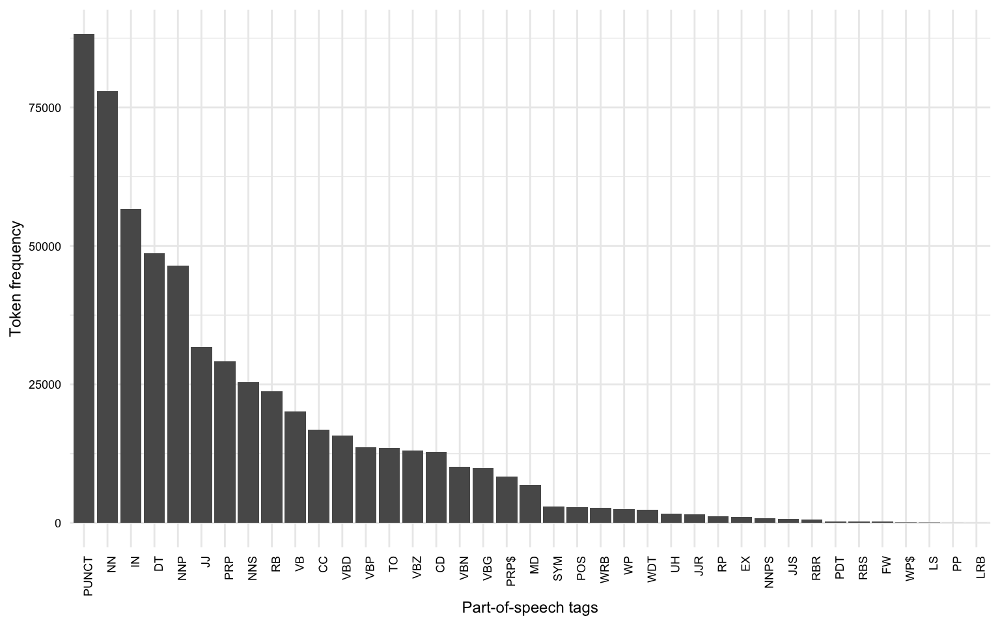
Consulting the PENN Tagset online, we can see that the pos variable includes a number of non-words or other elements to exclude including:
- ‘CD’ - Cardinal number
- ‘FW’ - Foreign word
- ‘LS’ - List item marker
- ‘SYM’ - Symbol
This modified tagset has grouped the punctuation tags into a single tag, ‘PUNCT’.
We can use this information to remove lemmas that are tagged with either of these values. We can do this by filtering the data frame to only include lemmas that are not tagged with the pos values listed above, as seen in Example 8.6.
Example 8.6
# Filter out lemmas with PUNCT or SYM for pos
masc_tbl <-
masc_tbl |>
filter(!(pos %in% c("CD", "FW", "LS", "SYM", "PUNCT")))
# Lemma count, sorted (again)
masc_tbl |>
count(lemma, sort = TRUE)> # A tibble: 26,164 × 2
> lemma n
> <chr> <int>
> 1 the 26137
> 2 be 19466
> 3 to 13548
> 4 and 12528
> 5 of 12005
> 6 a 10461
> 7 in 8374
> 8 i 7783
> 9 that 7082
> 10 you 5276
> # ℹ 26,154 more rowsNow we are only viewing the most frequent words in the dataset, which reduces the number of observations to around 26k. Let’s now explore the frequency distribution of the tokens. In Figure 8.2, I’ve created three plots which include: 1) all the types, 2) the top 100 types, and 3) the top 10 types in the dataset.
# [ ] consider how to present the 'all types' plot better, more concisely
# Plot lemma count for all types
masc_tbl |>
count(lemma) |>
arrange(desc(n)) |>
ggplot(aes(x = reorder(lemma, desc(n)), y = n)) +
geom_col() +
labs(x = "Types", y = "Token frequency") +
theme(axis.text.x = element_blank())
# Plot lemma count for top 100 types
masc_tbl |>
count(lemma) |>
arrange(desc(n)) |>
slice_head(n = 100) |>
ggplot(aes(x = reorder(lemma, desc(n)), y = n)) +
geom_col() +
labs(x = "Types", y = "Token frequency") +
theme(axis.text.x = element_text(angle = 90, hjust = 1.3))
# Plot lemma count for top 10 types
masc_tbl |>
count(lemma) |>
arrange(desc(n)) |>
slice_head(n = 10) |>
ggplot(aes(x = reorder(lemma, desc(n)), y = n)) +
geom_col() +
labs(x = "Types", y = "Token frequency") +
theme(axis.text.x = element_text(angle = 65, hjust = 1.3))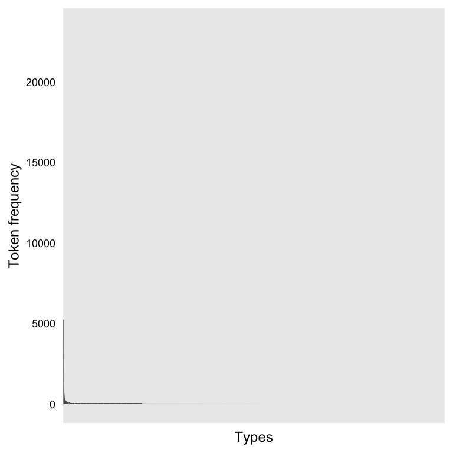
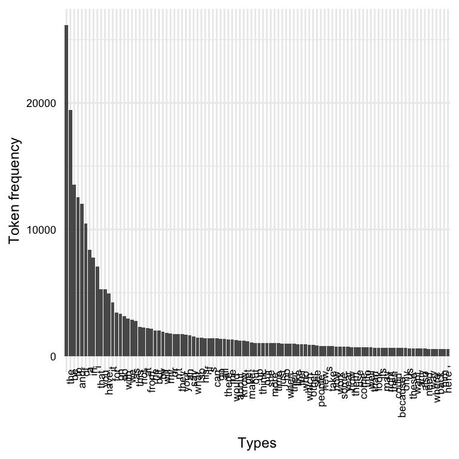

The distributions we see in Figure 8.2 are highly right-skewed (in Figure 8.2 (a) in a very extreme way!). This is typical of natural language distributions, notably documented by George Kingsley Zipf (Zipf 1949). This type of distribution approaches the theoretical Zipf distribution. A Zipf (or Zipfian) distribution is characterized by the fact that the frequency of any word is inversely proportional to its rank in the frequency table. In other words, the most frequent word occurs approximately twice as often as the second most frequent word, three times as often as the third most frequent word, and so on.
As we can see, our distribuions to not follow the Zipf distribution exactly. This is because the Zipf distribution is a theoretical distribution, and the actual distribution of words in a corpus is affected by various sampling factors, including the size of the corpus. The larger the corpus, the closer the distribution will be to the Zipf distribution.
The observation captured in the Zipf distribution is key to understanding quantitative text analysis. It demonstrates that most of the types in a corpus occur (relatively) infrequently, while a small number of types occur very frequently. In fact, if we calculate the cumulative frequency of the lemmas in the masc_tbl data frame, we can see that the top 10 types account for over 20% of the lemmas used in the dataset –by 100 types that increases to over 40%, as seen in Example 8.7.
Example 8.7
# Calculate cumulative frequency
lemma_cumul_freq <-
masc_tbl |>
count(lemma) |>
arrange(desc(n)) |>
mutate(cumulative = cumsum(n)) |>
mutate(percent = cumulative / sum(n))
lemma_cumul_freq |>
slice_head(n = 2000) |>
ggplot(aes(x = reorder(lemma, desc(n)), y = percent)) +
geom_col() +
geom_vline(xintercept = 10, linetype = "dashed") +
geom_vline(xintercept = 100, linetype = "dashed") +
# annotate("text", x = 10+10, y = 0.5, label = "10 lemmas") +
# annotate("text", x = 100+10, y = 0.5, label = "100 lemmas") +
scale_y_continuous(labels = scales::percent, limits = c(0, 1)) +
labs(x = "Types", y = "Cumulative frequency percent") +
theme(axis.text.x = element_blank())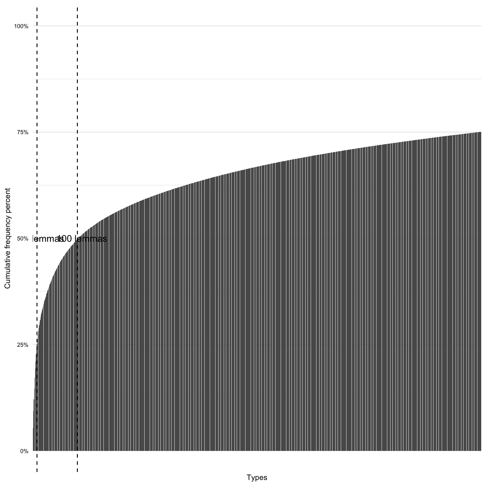
If we look at the types that appear within the first 100 most frequent, you can likely also appreciate another thing about language use. Let’s list the top 100 types in Example 8.8.
Example 8.8
# Top 100 types
lemma_cumul_freq |>
slice_head(n = 100) |>
pull(lemma) |>
matrix(ncol = 10, byrow = TRUE) |>
kable(col.names = NULL)| the | be | to | and | of | a | in | i | that | you |
| have | it | for | on | do | with | we | as | this | not |
| at | from | he | but | by | will | my | or | n't | they |
| your | an | say | what | so | his | if | 's | can | go |
| all | there | me | would | about | know | get | make | out | up |
| think | our | she | more | time | just | no | when | their | like |
| her | who | which | other | see | people | new | s | take | now |
| work | some | year | how | them | use | come | into | well | than |
| look | its | may | right | then | could | because | only | us | these |
| want | any | also | need | way | where | back | him | here | ' |
For the most part, the most frequent words are not content words, but rather function words (e.g. determiners, prepositions, pronouns, auxiliary verbs). Function words include a closed class of relatively few words that are used to express grammatical relationships between content words. It then is no surprise that they are the comprise many of the most frequent words in a corpus.
Another key observation is that among the most frequency content words (e.g. nouns, verbs, adjectives, adverbs) are words that are quite semantically generic –that is, they are words that are used in a wide range of contexts and take a wide range of meanings. Take for example the adjective ‘good’. It can be used to describe a wide range of nouns, such as ‘good food’, ‘good people’, ‘good times’, etc. A sometimes near-synonym of ‘good’, for example ‘good student’, is the word ‘studious’. Yet, ‘studious’ is not as frequent as ‘good’ as it is used to describe a narrower range of nouns, such as ‘studious student’, ‘studious scholar’, ‘studious researcher’, etc. In this way, ‘studious’ is more semantically specific than ‘good’.
So common across corpus samples, in some analyses these usual suspects of the most common words are considered irrelvant and are filtered out. In our ELL materials task, however, we might exclude them for this simple fact that it will be a given that we will teach these words given their grammatical importance. If we want to focus on the most common content words, we can filter out the function words.
One approach to filtering out these words is to use a pre-determined list of stopwords. The tidytext package includes a data frame stop_words of stopword lexicons for English. We can select a lexicon from stop_words and use anti_join() to filter out the words that appear in the word variable from the lemma variable in the masc_tbl data frame. In Example 8.9, I perform this filtering and then re-run the frequency analysis for the top 100 lemmas.
Example 8.9
# Load package
library(tidytext)
# Select stopword lexicon
stopwords <-
stop_words |>
filter(lexicon == "SMART")
# Filter out stop words
anti_join(
x = masc_tbl,
y = stopwords,
by = c("lemma" = "word")
) |>
count(lemma, sort = TRUE) |>
slice_head(n = 100) |>
pull(lemma) |>
matrix(ncol = 10, byrow = TRUE) |>
as_tibble() |>
kable(col.names = NULL)| n't | 's | make | time | people | work | year | back | ' | find |
| give | day | thing | jack | man | yeah | good | call | world | president |
| state | question | service | change | life | leave | subject | set | long | place |
| write | show | child | end | feel | hand | system | school | information | part |
| group | follow | run | support | today | point | read | provide | uh | send |
| turn | include | talk | fact | & | live | put | word | number | start |
| law | case | company | money | great | open | home | city | issue | woman |
| job | american | important | result | book | hear | sparrow | house | problem | um |
| america | walk | family | begin | country | date | face | friend | report | move |
| order | head | id | watch | form | program | market | week | area | figure |
The resulting list in Table 8.5 paints a different picture of the most frequent words in the dataset. The most frequent words are now content words, and included in most frequent words are more semantically specific words.
Eliminating words in this fashion, however, may not always be the best approach. Available lists of stopwords vary in their contents and are determined by other researchers for other potential uses. We may instead opt to create our own stopword list that is tailored to the task, or we may opt to use a statistical approach based on their distribution in the dataset using a combination of frequency and dispersion measures, as we will see in [the next section.]
For our case, however, we have another strategy to apply. Since our task is to identify relevant vocabulary, beyond the fundamental function words in English, we can use the part-of-speech tags to reduce our dataset to just the content words, that is nouns, verbs, adjectives, and adverbs. We need to consult the Penn Tagset again, to ensure we are selecting the correct tags. I will assign this data frame to masc_content_tbl to keep it separate from our main data frame masc_tbl, seen in Example 8.10.
Example 8.10
# Penn Tagset for content words
# Nouns: NN, NNS,
# Verbs: VB, VBD, VBG, VBN, VBP, VBZ
# Adjectives: JJ, JJR, JJS
# Adverbs: RB, RBR, RBS
content_pos <- c("NN", "NNS", "VB", "VBD", "VBG", "VBN", "VBP", "VBZ", "JJ", "JJR", "JJS", "RB", "RBR", "RBS")
# Select content words
masc_content_tbl <-
masc_tbl |>
filter(pos %in% content_pos)We now have reduced the number of observations by 50% focusing on the content words. We are getting closer to identifying the vocabulary that we want to include in our ELL materials, but we will need some more tools to help us identify the most relevant vocabulary.
Dispersion
Dispersion is a measure of how evenly distributed a linguistic unit is across a dataset. This is a key concept in text analysis, as important as frequency. It is important to recognize that frequency and dispersion are measures of different characteristics. We can have two words that occur with the same frequency, but one word may be more evenly distributed across a dataset than the other. Depending on the researcher’s aims, this may be an important distinction to make. For our task, it is likely the case that we want to capture words that are well-dispersed across the dataset as words that have a high frequency and a low dispersion tend to be connected to a particular context, whether that be a particular genre, a particular speaker, a particular topic, etc. In other research, aim may be the reverse; to identify words that are highly frequent and highly concentrated in a particular context to identify words that are distinctive to that context.
This a wide variety of measures that can be used to estimate the distribution of types across a dataset. Let’s focus on three measures: document frequency (\(df\)), inverse document frequency (\(idf\)), and Gries’ Deviation of Proportions (\(dp\)).
The most basic measure is document frequency (\(df\)). This is the number of documents in which a type appears at least once. For example, if a type appears in 10 documents, then the document frequency is 10. This is a very basic measure, but it is a good starting point.
A nuanced version of document frequency is inverse document frequency (\(idf\)). This measure takes the total number of documents and divides it by the document frequency. This results in a measure that is inversely proportional to the document frequency. That is, the higher the document frequency, the lower the inverse document frequency. This measure is often log-transformed to spread out the values.
One thing to consider about \(df\) and \(idf\) is that niether takes into account the length of the documents in which the type appears nor the spread of the type within each document. To take these factors into account, we can use Gries’ Deviation of Proportions (\(dp\)) measure (Gries 2023, 87–88). The \(dp\) measure is calculated as the difference between the proportion of a tokens in a document and tokens in the corpus. The metric can be subtracted from 1 to create a normalized measure of dispersion ranging between 0 and 1, with lower values being more dispersed.
Let’s consider how these measures differ with three scenarios:
Imagine a type with a token frequency of 100 appears in each of the 10 documents in a corpus.
A. Each of the documents is 100 words long. The type appears 10 times in each document. B. Each of the documents is 100 words long. But now the type appears once in 9 documents and 91 times in 1 document. C. Nine of the documents constitute 99% of the corpus. The type appears once in each of the 9 documents and 91 times in the 10th document.
Scenario A is the most dispersed, scenario B is less dispersed, and scenario C is the least dispersed. Yet, the type’s \(df\) and \(idf\) scores will be the same. But the \(dp\) score will reflect increasing concentration of the type from A to B to C. You may wonder why we would want to use \(df\) or \(idf\) at all. The answer is some combination of the fact that they are computationally less expensive to calculate, they are widely used (especially \(idf\)), and/ or in many practical situations they often highly correlated with \(dp\).
So for our task we will use \(dp\) as our measure of dispersion. The qtalrkit package includes the calc_type_metrics() function which calculates, among other metrics, the dispersion metrics \(df\), \(idf\), and/ or \(dp\). Let’s select dp and assign the result to masc_lemma_disp, as seen in Example 8.11.
Example 8.11
# Load package
library(qtalrkit)
# Calculate deviance of proportions (DP)
masc_lemma_disp <-
masc_content_tbl |>
calc_type_metrics(
type = lemma,
documents = doc_id,
dispersion = "dp"
) |>
arrange(dp)
# Preview
masc_lemma_disp |>
slice_head(n = 10)> # A tibble: 10 × 3
> type n dp
> <chr> <dbl> <dbl>
> 1 be 19231 0.123
> 2 have 5136 0.189
> 3 not 2279 0.240
> 4 make 1149 0.266
> 5 other 882 0.270
> 6 more 1005 0.276
> 7 take 769 0.286
> 8 only 627 0.286
> 9 time 931 0.314
> 10 see 865 0.327We would like to identify lemmas that are frequent and well-dispersed. But an important question arises, what is the threshold for frequency and dispersion that we should use to identify the lemmas that we want to include in our ELL materials?
There are statistical approaches to identifying natural breakpoints, including clustering, but a visual inspection is often good enough for practical purposes. Let’s create a density plot to see if there is a natural break in the distribution of our dispersion measure, as seen in Figure 8.4.
Example 8.12
# Density plot of dp
masc_lemma_disp |>
ggplot(aes(x = dp)) +
geom_density() +
scale_x_continuous(breaks = seq(0, 1, .1)) +
labs(x = "Deviation of Proportions")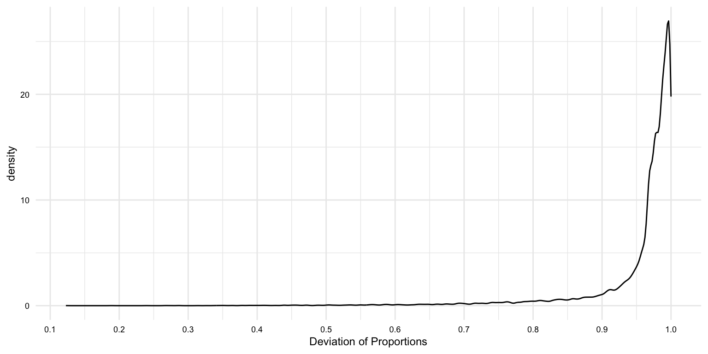
What we are looking for is an elbow in the distribution of dispersion measures. In Figure 8.4, we can see that there is distinctive bend in the distribution between .85 and .97. We can split the difference and use this as a threshold to filter out lemmas that are less dispersed. In Example 8.13, I filter out lemmas that have a dispersion measure less than .91. Then in Table 8.6, I preview the top and bottom 50 lemmas in the dataset.
Example 8.13
# Filter for lemmas with dp <= .91
masc_lemma_disp_thr <-
masc_lemma_disp |>
filter(dp <= .91) |>
arrange(desc(n))
# Preview top
masc_lemma_disp_thr |>
slice_head(n = 50) |>
pull(type) |>
matrix(ncol = 10, byrow = TRUE) |>
kable(col.names = NULL)
# Preview bottom
masc_lemma_disp_thr |>
slice_tail(n = 50) |>
pull(type) |>
matrix(ncol = 10) |>
kable(col.names = NULL)Table 8.6: Frequency of tokens in the MASC dataset after filtering out lemmas with a Deviation of Proportions less than .91
| be | have | do | not | n't | say | go | know | get | make |
| think | more | just | time | so | other | see | people | take | now |
| work | year | come | use | well | look | then | right | only | want |
| also | way | need | back | here | new | find | give | thing | tell |
| t | first | help | day | many | man | ask | very | much | even |
?(caption)
| fortunately | ignorance | liability | brave | summarize | liberty | wound | nostalgic | accidentally | wax |
| dump | sting | tuition | unleash | blur | going | devote | shy | protective | faith-based |
| instrument | mainstream | awaken | prosperous | resistance | awkward | alright | proximity | preside | decidedly |
| triumph | wildly | hook | buzz | absurd | afterwards | evolutionary | sandy | rethink | resolute |
| harsh | dismiss | fetch | presume | qualify | eve | envy | interfere | strictly | evidently |
?(caption)
We now have a good candidate list of common vocabulary that is spread well across the corpus.
Relative frequency
Gauging frequency and dispersion across the entire corpus is a good starting point for any frequency analysis, but it is often the case that we want to compare the frequency and dispersion of linguistic units across corpora or sub-corpora.
In the case of the MASC dataset, for example, we may want to compare metrics across the two modalities or the various genres. Simply comparing frequency counts across these sub-corpora is not a good approach, and can be misleading, as the sub-corpora may vary in size. For example, if one sub-corpus is twice as large as another sub-corpus, then, all else being equal, the frequency counts will be twice as large in the larger sub-corpus. This is why we use relative frequency measures, which are normalized by the size of the sub-corpus.
To normalize the frequency of linguistic units across sub-corpora, we can use the relative frequency measure. This is the frequency of a linguistic unit divided by the total number of linguistic units in the sub-corpus. This bakes in the size of the sub-corpus into the measure. The notion of relative frequency is key to all research working with text, as it is the basis for the statistical approach to text analysis where comparisons are made.
There are some field-specific terms that are used to refer to relative frequency measures. For example, in information retrieval and Natural Language Processing, the relative frequency measure is often referred to as the term frequency. In corpus linguistics, the relative frequency measure is often modified slightly to include a constant (e.g. \(rf * 100\)) which is known as the observed relative frequency. Athough the observed relative frequency per number of tokens is not strictly necessary, it is often used to make the values more interpretable as we can now talk about an observed relative frequency of 1.5 as a linguistic unit that occurs 1.5 times per 100 linguistic units.
Let’s consider how we might compare the frequency and dispersion of lemmas across the two modalities in the MASC dataset, spoken and written. To make this a bit more interesting and more relevant, let’s add the pos variable to our analysis. The intent, then, will be to identify lemmas tagged with particular parts of speech that are particularly indicative of each of the modaliites.
We can do this by collapsing the lemma and pos variables into a single variable, lemma_pos, with the str_c() function, as seen in Example 8.14.
Example 8.14
# Collapse lemma and pos into type
masc_content_tbl <-
masc_content_tbl |>
mutate(lemma_pos = str_c(lemma, pos, sep = "_"))
# Preview
masc_content_tbl |>
slice_head(n = 10)> # A tibble: 10 × 8
> doc_id modality genre term_num term lemma pos lemma_pos
> <chr> <chr> <chr> <dbl> <chr> <chr> <chr> <chr>
> 1 1 Written Letters 3 contribution contribution NN contributio…
> 2 1 Written Letters 7 mean mean VB mean_VB
> 3 1 Written Letters 8 more more JJR more_JJR
> 4 1 Written Letters 12 know know VB know_VB
> 5 1 Written Letters 15 help help VB help_VB
> 6 1 Written Letters 17 see see VB see_VB
> 7 1 Written Letters 19 much much JJ much_JJ
> 8 1 Written Letters 21 contribution contribution NN contributio…
> 9 1 Written Letters 22 means mean VBZ mean_VBZ
> 10 1 Written Letters 25 'm be VBP be_VBPNow this will increase the number of lemma types in the dataset as we are now considering lemmas where the same lemma form is tagged with different parts-of-speech.
Getting back to calculating the frequency and dispersion of lemmas in each modality, we can use the calc_type_metrics() function with lemma_pos as our type argument. We will, however, need to apply this function to each sub-corpus independently and then concatenate the two data frames. This function returns a (raw) frequency measure by default, but we can specify thefrequency argument to rf to calculate the relative frequency of the linguistic units as in Example 8.15.
Example 8.15
# Calculate relative frequency
# Spoken
masc_spoken_metrics <-
masc_content_tbl |>
filter(modality == "Spoken") |>
calc_type_metrics(
type = lemma_pos,
documents = doc_id,
frequency = "rf",
dispersion = "dp"
) |>
mutate(modality = "Spoken") |>
arrange(desc(n))
# Written
masc_written_metrics <-
masc_content_tbl |>
filter(modality == "Written") |>
calc_type_metrics(
type = lemma_pos,
documents = doc_id,
frequency = "rf",
dispersion = "dp"
) |>
mutate(modality = "Written") |>
arrange(desc(n))
# Concatenate spoken and written metrics
masc_metrics <-
bind_rows(masc_spoken_metrics, masc_written_metrics)
# Preview
masc_metrics |>
slice_head(n = 10)> # A tibble: 10 × 5
> type n rf dp modality
> <chr> <dbl> <dbl> <dbl> <chr>
> 1 be_VBZ 2612 0.0489 0.0842 Spoken
> 2 be_VBP 1282 0.0240 0.111 Spoken
> 3 be_VBD 1020 0.0191 0.301 Spoken
> 4 n't_RB 829 0.0155 0.139 Spoken
> 5 have_VBP 766 0.0143 0.152 Spoken
> 6 do_VBP 728 0.0136 0.180 Spoken
> 7 be_VB 655 0.0123 0.147 Spoken
> 8 not_RB 638 0.0119 0.137 Spoken
> 9 just_RB 404 0.00756 0.267 Spoken
> 10 so_RB 387 0.00725 0.357 SpokenWith the rf measure, we are now in a position to compare ‘apples to apples’, as you might say. We can now compare the relative frequency of lemmas across the two modalities. Let’s preview the top 10 lemmas in each modality, as seen in Example 8.16.
Example 8.16
# Preview top 10 lemmas in each modality
masc_metrics |>
group_by(modality) |>
slice_max(n = 10, order_by = rf) |>
ungroup()> # A tibble: 20 × 5
> type n rf dp modality
> <chr> <dbl> <dbl> <dbl> <chr>
> 1 be_VBZ 2612 0.0489 0.0842 Spoken
> 2 be_VBP 1282 0.0240 0.111 Spoken
> 3 be_VBD 1020 0.0191 0.301 Spoken
> 4 n't_RB 829 0.0155 0.139 Spoken
> 5 have_VBP 766 0.0143 0.152 Spoken
> 6 do_VBP 728 0.0136 0.180 Spoken
> 7 be_VB 655 0.0123 0.147 Spoken
> 8 not_RB 638 0.0119 0.137 Spoken
> 9 just_RB 404 0.00756 0.267 Spoken
> 10 so_RB 387 0.00725 0.357 Spoken
> 11 be_VBZ 4745 0.0248 0.230 Written
> 12 be_VBD 3317 0.0173 0.366 Written
> 13 be_VBP 2617 0.0137 0.237 Written
> 14 be_VB 1863 0.00974 0.218 Written
> 15 not_RB 1640 0.00858 0.259 Written
> 16 have_VBP 1227 0.00642 0.290 Written
> 17 n't_RB 905 0.00473 0.540 Written
> 18 have_VBD 859 0.00449 0.446 Written
> 19 have_VBZ 777 0.00406 0.335 Written
> 20 say_VBD 710 0.00371 0.609 WrittenWe can appreciate, now, that there are similarities and a few differences between the most frequent lemmas for each modality. First, there are similar lemmas in written and spoken modalities, such as ‘be’, ‘have’, and ‘not’. Second, the top 10 include verbs and adverbs. Now we are looking at the most frequent types, so it is not surprising that we see more in common than not. However, looking close we can see that contracted forms are more frequent in the spoken modality, such as ‘isn’t’, ‘don’t’, and ‘can’t’ and that ordering of the verb tenses differs to some degree. Whether these are important distinctions for our task is something we will need to consider.
We can further cull our results by filtering out lemmas that are not well-dispersed across the sub-corpora. Although it may be tempting to use the threshold we used earlier, we should consider that the size of the sub-corpora are different and the distribution of the dispersion measure may be different. With this in mind, we need to visualize the distribution of the dispersion measure for each modality, as seen in Figure 8.5.
# Density plot of dp by modality
masc_metrics |>
ggplot(aes(x = dp)) +
geom_density(alpha = .5) +
scale_x_continuous(breaks = seq(0, 1, .1)) +
labs(x = "Deviation of Proportions", y = "Density") +
facet_wrap(~ modality, ncol = 2, scales = "free_x")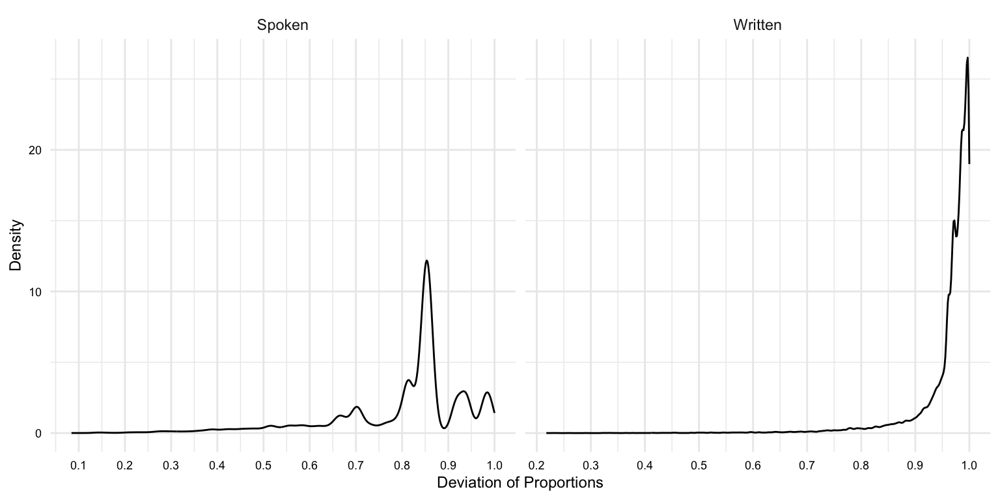
As expected, the density plots point to different thresholds for each modality.The written subcorpus follows closely with the previous distribution, but the spoken subcorpus has more than one bend in the distribution. Why are there multiple peaks in the density plot? It points to some level of inconsistency in the spoken data, either potentially some level of context-dependent language use (genres, topics, speech styles) or it could be due to the fact that the spoken subcorpus’ size is too small to provide a reliable distribution.
In any case, we can estimate the threshold for the spoken corpus making use of the largest peak in the distribution as the reference point. With this approach in mind, lets maintain the \(.91\) threshold for the written subcorpus and use a \(.79\) threshold for the spoken subcorpus. Let’s filter out lemmas that have a dispersion measure less than .91 for the written subcorpus and less than .79 for the spoken subcorpus, as seen in Example 8.17.
Example 8.17
# Filter for lemmas with
# dp <= .91 for written and
# dp <= .79 for spoken
masc_metrics_thr <-
masc_metrics |>
filter(
(modality == "Written" & dp <= .91) |
(modality == "Spoken" & dp <= .79)
) |>
arrange(desc(rf))Filtering the less-dispersed types reduces the dataset from 33637 to 4860 observations. This will provide us with a more succinct list of common and well-dispersed lemmas that are used in each modality.
As much as the frequency and dispersion measures can provide us with a good starting point, it does not provide an understanding of what types are more indicative of a particular sub-corpus, modality subcorpora in our case. We can do this by calculating the log odds ratio of each lemma in each modality.
The log odds ratio is a measure that quantifies the difference between the frequencies of a type in two corpora or sub-corpora. In spirit and in name, it compares the odds of a type occurring in one corpus versus the other. The values range from negative to positive infinity, with negative values indicating that the type is more frequent in the first corpus and positive values indicating that the lemma is more frequent in the second corpus. The magnitude of the value indicates the strength of the association.
The tidylo package provides a convenient function bind_log_odds() to calculate the log odds ratio, and a weighed variant, for each type in each sub-corpus. Let’s use this function to calculate the log odds ratio for each lemma in each modality, as seen in Example 8.18.
Example 8.18
# Load package
library(tidylo)
# Calculate log odds ratio
masc_metrics_thr <-
masc_metrics_thr |>
bind_log_odds(
set = modality,
feature = type,
n = n,
unweighted = TRUE
)
# Preview (ordered by log_odds)
# Spoken
masc_metrics_thr |>
slice_max(n = 10, order_by = log_odds)> # A tibble: 10 × 7
> type n rf dp modality log_odds log_odds_weighted
> <chr> <dbl> <dbl> <dbl> <chr> <dbl> <dbl>
> 1 understanding_NN 45 0.000843 0.649 Spoken 0.955 6.41
> 2 meeting_NNS 42 0.000786 0.702 Spoken 0.955 6.19
> 3 testimony_NN 36 0.000674 0.785 Spoken 0.955 5.73
> 4 administration_NN 34 0.000637 0.650 Spoken 0.955 5.57
> 5 trial_NN 33 0.000618 0.769 Spoken 0.955 5.49
> 6 governor_NN 28 0.000524 0.597 Spoken 0.955 5.05
> 7 intelligent_JJ 28 0.000524 0.777 Spoken 0.955 5.05
> 8 faith_NN 27 0.000506 0.524 Spoken 0.955 4.96
> 9 walk_VBZ 27 0.000506 0.761 Spoken 0.955 4.96
> 10 gun_NNS 26 0.000487 0.577 Spoken 0.955 4.87# Written
masc_metrics_thr |>
slice_min(n = 10, order_by = log_odds)> # A tibble: 10 × 7
> type n rf dp modality log_odds log_odds_weighted
> <chr> <dbl> <dbl> <dbl> <chr> <dbl> <dbl>
> 1 correct_JJ 13 0.0000680 0.900 Written -0.461 -3.75
> 2 mean_VBP 38 0.000199 0.776 Written -0.411 -5.00
> 3 president_NN 37 0.000194 0.840 Written -0.406 -4.81
> 4 board_NN 27 0.000141 0.830 Written -0.405 -4.10
> 5 argument_NN 24 0.000126 0.798 Written -0.356 -3.07
> 6 meeting_NN 44 0.000230 0.852 Written -0.343 -3.90
> 7 question_NN 80 0.000418 0.630 Written -0.330 -4.94
> 8 say_VBN 20 0.000105 0.767 Written -0.325 -2.42
> 9 read_VBN 10 0.0000523 0.895 Written -0.325 -1.71
> 10 cut_NN 9 0.0000471 0.879 Written -0.325 -1.62The distinctive terms in each modality from Example 8.18 may not jibe with your intuitio, and that’s understandable. This is likely because we are comparing sub-corpora of different sizes and with different document lengths. The log odds ratio is a measure that is sensitive to these differences.
The second measure produced by bind_log_odds() function, is the weighted log odds ratio. This measure provides a more robust and interpretable measure for comparing term frequencies across corpora, especially when term frequencies are low or when corpora are of different sizes. The weighting (or standardization) also makes it easier to identify terms that are particularly distinctive or characteristic of one corpus over another. Note that the weighted measure’s interpretation is slightly different that the log odds’s. The larger positive values in each corpus indicate that the type is more indicative of that (sub-)corpus, and the larger negative values indicate that the type is less indicative.
Let’s imagine we would like to extract the most indicative verbs for each modality using the weighted log odds as our measure. We can do this with a little regular expression magic. Let’s use the str_subset() function to filter for lemmas that start with ‘V’ and then use slice_max() to extract the top 10 most indicative verb lemmas, as seen in Example 8.19.
Example 8.19
# Preview (ordered by log_odds_weighted)
# Spoken and written
masc_metrics_thr |>
group_by(modality) |>
filter(str_detect(type, "_V")) |>
slice_max(n = 10, order_by = log_odds_weighted) |>
select(-n, -log_odds) |>
ungroup()> # A tibble: 20 × 5
> type rf dp modality log_odds_weighted
> <chr> <dbl> <dbl> <chr> <dbl>
> 1 be_VBZ 0.0489 0.0842 Spoken 14.0
> 2 do_VBP 0.0136 0.180 Spoken 10.3
> 3 be_VBP 0.0240 0.111 Spoken 8.66
> 4 think_VBP 0.00655 0.259 Spoken 8.32
> 5 have_VBP 0.0143 0.152 Spoken 8.00
> 6 know_VBP 0.00528 0.260 Spoken 7.03
> 7 go_VBG 0.00534 0.207 Spoken 6.47
> 8 do_VBD 0.00603 0.321 Spoken 5.97
> 9 mean_VBP 0.00247 0.543 Spoken 5.94
> 10 do_VB 0.00455 0.207 Spoken 5.61
> 11 don_VB 0.000361 0.839 Written 4.04
> 12 doe_VBZ 0.000350 0.871 Written 3.98
> 13 walk_VBD 0.000319 0.790 Written 3.80
> 14 associate_VBN 0.000303 0.777 Written 3.70
> 15 reply_VBD 0.000293 0.838 Written 3.64
> 16 develop_VBG 0.000288 0.812 Written 3.60
> 17 require_VBN 0.000272 0.793 Written 3.50
> 18 fall_VBD 0.000267 0.757 Written 3.47
> 19 meet_VB 0.000241 0.729 Written 3.30
> 20 regard_VBG 0.000225 0.823 Written 3.19Note that the log odds are larger for the spoken modality than the written modality. This indicates that theses types are more strongly indicative of the spoken modality than the types in the written modality are indicative of the written modality. This is not surprising, as the written modality is typically more diverse in terms of lexical usage than the spoken modality, where the terms tend to be repeated more often, including verbs.
Co-occurrence analysis
Moving forward on our task, we have a good idea of the general vocabulary that we want to include in our ELL materials and can identify lemma types that are particularly indicative of each modality. Another useful approach to complement our analysis is to identify words that co-occur with our target lemmas –in particular verbs. In English it is common for verbs to appear with a preposition or adverb, such as ‘give up’, ‘look after’. These ‘phrasal verbs’ form a semantic unit that is distinct from the verb alone.
In cases such as this, we are aiming to do a co-occurrence analysis. Co-occurrence analysis is a set of methods that are used to identify words that appear in close proximity to a target type.
An exploratory, primarily qualitative, approach is to display the co-occurrence of words in a Keyword in Context (KWIC). This is a table that displays the target word in the center of the table and the words that appear before and after the target word. This is a useful approach for spot identifying collocations of a target word or phrase.
The quanteda package includes a function kwic() that can be used to create a KWIC table. It does require some transformation to the data, however. We need to collapse the lemma column into a single string for each document from the original transformed dataset, masc_tbl. Then we can apply the corpus() and then tokens function to create a quanteda tokens object. Then we can apply the kwic() function to create a KWIC table.
Example 8.20
# Collapse lemma, pos into a single string
masc_text_tbl <-
masc_tbl |>
mutate(lemma_pos = str_c(lemma, pos, sep = "_")) |>
group_by(doc_id, modality, genre) |>
summarize(text = str_c(lemma_pos, collapse = " ")) |>
ungroup()
# Load package
library(quanteda)
masc_corpus <-
masc_text_tbl |>
corpus(
text_field = "text",
docid_field = "doc_id"
)
masc_corpus |>
tokens() |>
kwic(
pattern = phrase("*_V* *_IN*"),
window = 3
) |>
as_tibble() |>
select(docname, pre, keyword, post) |>
slice_sample(n = 10)> # A tibble: 10 × 4
> docname pre keyword post
> <chr> <chr> <chr> <chr>
> 1 171 other_JJ hollywood_NNP star_NNS come_VBD as_IN well_RB simply…
> 2 242 not_RB only_RB i_PRP find_VBD out_IN more_JJR about…
> 3 206 long_JJ have_VBP you_PRP live_VBD in_IN charlotte_NNP …
> 4 76 fire_NN let_VBG it_PRP burn_VBP out_IN by_IN itself_P…
> 5 170 s_POS paranoia_NN by_IN flee_VBG into_IN egypt_NNP with…
> 6 382 be_VBZ currently_RB be_VBG examine_VBN by_IN regulator_NNS …
> 7 217 collection_NN of_IN nestorian_NNP cross_VBZ from_IN the_DT yuan_NN…
> 8 98 destroy_VBN save_VB for_IN reserve_VBN for_IN the_DT smithso…
> 9 233 secret_JJ in_NNP attorney_NNS charge_VBN with_IN prosecute_VBG …
> 10 153 the_DT artist_NN have_VBD reach_VBN within_IN himself_PRP it…A straightforward quantitative way to explore co-occurrence is to set the unit of observation to an \(n-gram\) of terms. An \(n-gram\) is a sequence of \(n\) words. For example, a 2-gram is a sequence of two words, a 3-gram is a sequence of three words, and so on. Then, the frequency and dispersion metrics can be calculated for each \(n-gram\).
In general, deriving \(n-grams\) from a corpus is a straightforward process. The tidytext package includes a function unnest_tokens() that can be used to create \(n-grams\) from a corpus. The function can take a single column of untokenized text or a tokenized column in combination with a variable to use as the grouping variable. In the masc_tbl dataset, we have tokenized text in the lemma column and a grouping variable in the doc_id column. We can use the unnest_tokens() function to create a new data frame with a row for each \(n-gram\) in each document, as seen in Example 8.21.
Example 8.21
# Load package
library(tidytext)
# Create bigrams
masc_tbl |>
unnest_tokens(
output = bigrams,
input = lemma,
token = "ngrams",
n = 2,
collapse = "doc_id"
) |>
slice_head(n = 10)> # A tibble: 10 × 2
> doc_id bigrams
> <chr> <chr>
> 1 1 december your
> 2 1 your contribution
> 3 1 contribution to
> 4 1 to goodwill
> 5 1 goodwill will
> 6 1 will mean
> 7 1 mean more
> 8 1 more than
> 9 1 than you
> 10 1 you mayThe result of this operation can be joined with the original dataset using the doc_id as the key variable. Then we can calculate the frequency and dispersion metrics for each \(n-gram\) in each modality. However, this approach is not ideal for our task. The reason is that we are interested in identifying \(n-grams\) that include verbs. The unnest_tokens() function does not allow us to filter the \(n-grams\) by part-of-speech.
Another, more informative approach is to create a new variable that combines the lemma and part-of-speech for each observation before using unnest_tokens() to generate the bigrams. We can use the str_c() function from the stringr package to join the lemma and pos columns into a single string, so that we have a variable lemma_pos with the lemma and part-of-speech joined by an underscore.
One consideration that we need to take for our goal to identify verb particle constructions, is how we ultimately want to group our lemma_pos values. This is particularly important given the fact that our pos tags for verbs include information about the verb’s tense and person. This means that a verb in a verb particle bigram, such as ‘look after’, will be represented by multiple lemma_pos values, such as ‘look_VB’, ‘look_VBP’, ‘look_VBD’, and ‘look_VBG’. If we want this level of detail, we just proceed as described above. However, if we want to group the verb particle bigrams by a single verb value, we need to recode the pos values for verbs. We can do this with the case_match() function from the dplyr package.
In Example 8.22, I recode the pos values for verbs to ‘V’ and then join the lemma and pos columns into a single string.
Example 8.22
# Collapse lemma into a single string
masc_lemma_pos_tbl <-
masc_tbl |>
mutate(pos = case_when(
str_detect(pos, "^V") ~ "V",
TRUE ~ pos
)) |>
group_by(doc_id) |>
mutate(lemma_pos = str_c(lemma, pos, sep = "_")) |>
ungroup()
# Preview
masc_lemma_pos_tbl |>
slice_head(n = 10)> # A tibble: 10 × 8
> doc_id modality genre term_num term lemma pos lemma_pos
> <chr> <chr> <chr> <dbl> <chr> <chr> <chr> <chr>
> 1 1 Written Letters 0 December december NNP december_NNP
> 2 1 Written Letters 2 Your your PRP$ your_PRP$
> 3 1 Written Letters 3 contribution contribution NN contributio…
> 4 1 Written Letters 4 to to TO to_TO
> 5 1 Written Letters 5 Goodwill goodwill NNP goodwill_NNP
> 6 1 Written Letters 6 will will MD will_MD
> 7 1 Written Letters 7 mean mean V mean_V
> 8 1 Written Letters 8 more more JJR more_JJR
> 9 1 Written Letters 9 than than IN than_IN
> 10 1 Written Letters 10 you you PRP you_PRPmasc_lemma_pos_tbl |>
unnest_tokens(
output = bigrams,
input = lemma_pos,
token = "ngrams",
n = 2,
to_lower = FALSE,
collapse = "doc_id"
) |>
filter(str_detect(bigrams, "_V.*_IN")) |>
calc_type_metrics(
type = bigrams,
documents = doc_id,
frequency = "rf",
dispersion = "dp"
) |>
arrange(desc(rf))> # A tibble: 4,512 × 4
> type n rf dp
> <chr> <dbl> <dbl> <dbl>
> 1 be_V in_IN 359 0.0259 0.366
> 2 be_V that_IN 210 0.0151 0.504
> 3 look_V at_IN 157 0.0113 0.528
> 4 say_V that_IN 134 0.00966 0.580
> 5 be_V on_IN 120 0.00865 0.523
> 6 talk_V about_IN 114 0.00821 0.622
> 7 be_V of_IN 110 0.00793 0.503
> 8 know_V that_IN 98 0.00706 0.605
> 9 think_V that_IN 90 0.00649 0.643
> 10 be_V about_IN 76 0.00548 0.608
> # ℹ 4,502 more rowsWe have identified and derived frequency and dispersion metrics for \(n-grams\) that include verb particle construction candidates. Yet, there is a problem with this approach. The problem is that the \(n-grams\) are not necessarily verb particle constructions in the sense that they form a semantic unit. Second, frequency and dispersion metrics are not necessarily the best measures for identifying the co-occurrence relationship between the verb and the particle. In other words, just because a two-word sequence is frequent and well-dispersed does not mean that the two words form a semantic unit.
To address these issues, we can use a statistical measures to estimate collocational strength between two words. A collocation is a sequence of words that co-occur more often than would be expected by chance. The most common measure of collocation is the pointwise mutual information (PMI) measure. The PMI measure is calculated as the log ratio of the observed frequency of two words co-occurring to the expected frequency of the two words co-occurring. The expected frequency is calculated as the product of the frequency of each word. The PMI measure is a log ratio, so the values range from negative to positive infinity, with negative values indicating that the two words co-occur less often than would be expected by chance and positive values indicating that the two words co-occur more often than would be expected by chance. The magnitude of the value indicates the strength of the association.
Let’s calculate the PMI for all the bigrams in the MASC dataset. We can use the calc_assoc_metrics() function from qtalrkit. We need to specify the association argument to pmi and the type argument to bigrams, as seen in Example 8.23.
Example 8.23
masc_lemma_pos_assoc <-
masc_lemma_pos_tbl |>
calc_assoc_metrics(
doc_index = doc_id,
token_index = term_num,
type = lemma_pos,
association = "pmi"
)
# Preview
masc_lemma_pos_assoc |>
arrange(desc(pmi)) |>
slice_head(n = 10)> # A tibble: 10 × 4
> x y n pmi
> <chr> <chr> <dbl> <dbl>
> 1 #Christian_NN bigot_NN 1 12.4
> 2 #FAIL_NN phenomenally_RB 1 12.4
> 3 #NASCAR_NN #indycar_NN 1 12.4
> 4 #PALM_NN merchan_NN 1 12.4
> 5 #Twitter_NN #growth_NN 1 12.4
> 6 #college_NN #jobs_NN 1 12.4
> 7 #education_NN #teaching_NN 1 12.4
> 8 #faculty_NN #cites_NN 1 12.4
> 9 #fb_NN siebel_NNP 1 12.4
> 10 #glitchmyass_NN reps_NNP 1 12.4One caveat to using the PMI measure is that it is sensitive to the frequency of the words. If the words in a bigram pair are infrequent, and especially if they only occur once, then the PMI measure will be inflated. To mitigate this issue, we can apply a frequency threshold to the bigrams before calculating the PMI measure. Let’s filter out bigrams that occur less than 10 times, as seen in Example 8.24.
Example 8.24
# Filter for bigrams that occur >= 10 times
masc_lemma_pos_assoc_thr <-
masc_lemma_pos_assoc |>
filter(n >= 10) |>
arrange(desc(pmi))
# Preview
masc_lemma_pos_assoc_thr |>
slice_head(n = 10)> # A tibble: 10 × 4
> x y n pmi
> <chr> <chr> <dbl> <dbl>
> 1 pianista_NN irlandesa_NN 10 10.0
> 2 costa_NNP rica_NNP 10 9.95
> 3 nanowrimo_NNP novel_NNP 12 9.87
> 4 bin_NN laden_NNP 11 9.79
> 5 osama_NNP bin_NN 11 9.79
> 6 bin_NNP ladin_NNP 11 9.70
> 7 los_NNP angeles_NNP 11 9.64
> 8 chilean_JJ seabass_NNS 13 9.64
> 9 novel_NNP ch_NNP 12 9.58
> 10 st_NNP zip_NNP 10 9.52Now we are in a position to identify verb particle constructions. We can filter for bigrams that include a verb and a particle and that have a PMI measure greater than 0, as seen in Example 8.25.
Example 8.25
# Filter for bigrams that include a verb and a particle
# and that have a PMI measure greater than 0
masc_verb_part_assoc <-
masc_lemma_pos_assoc_thr |>
filter(str_detect(x, "_V")) |>
filter(str_detect(y, "_IN")) |>
filter(pmi > 0) |>
arrange(x)
# Preview
masc_verb_part_assoc |>
slice_head(n = 10)> # A tibble: 10 × 4
> x y n pmi
> <chr> <chr> <dbl> <dbl>
> 1 account_V for_IN 17 3.74
> 2 acknowledge_V that_IN 13 3.62
> 3 act_V as_IN 14 2.96
> 4 agree_V with_IN 45 3.21
> 5 agree_V that_IN 14 1.94
> 6 appear_V on_IN 12 1.98
> 7 appear_V in_IN 24 1.76
> 8 argue_V that_IN 20 3.26
> 9 arrive_V at_IN 18 3.39
> 10 arrive_V in_IN 10 1.48We can clean up the results a bit by removing the part-of-speech tags from the x and y variables, up our minimum PMI value, and create a network plot to visualize the results, as seen in Figure 8.6.
# Clean up results
masc_verb_part_assoc_plot <-
masc_verb_part_assoc |>
filter(pmi >= 2) |>
mutate(
x = str_remove(x, "_V.*"),
y = str_remove(y, "_IN")
)
# Create an association network plot
# `x` and `y` are the nodes
# `pmi` is the edge weight
library(igraph)
library(ggraph)
masc_verb_part_assoc_plot |>
graph_from_data_frame() |>
ggraph(layout = "nicely") +
geom_edge_link(aes(color = pmi),
alpha = 0.8,
edge_width = 0.8,
arrow = grid::arrow()
) +
geom_node_point(color = "black") +
geom_node_text(aes(label = name), repel = TRUE) +
scale_edge_color_gradient(low = "grey90", high = "grey20") +
theme_void()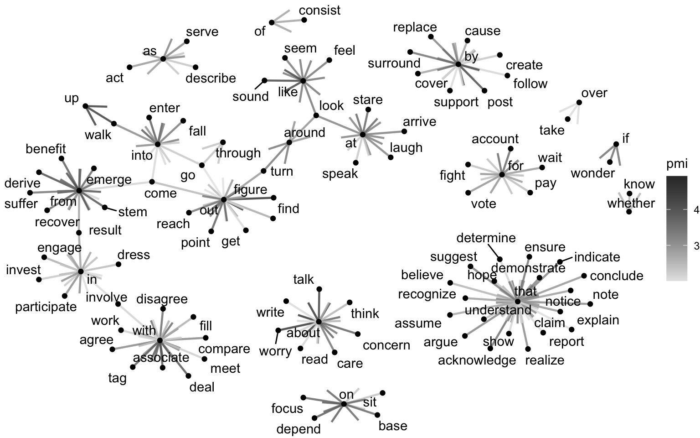
From this plot, and from the underlying data, we can explore verb particle constructions. We could go further and apply our co-occurrence methods to each modality separately, if we wanted to identify verb particle constructions that are distinctive to each modality. We could also apply our co-occurrence methods to other parts-of-speech, such as adjectives and nouns, to identify collocations of these parts-of-speech. There is much more to explore with co-occurrence analysis, but this should give you a good idea of the types of questions that can be addressed with co-occurrence analysis.
8.2.2 Unsupervised learning
Aligned in purpose with descriptive approaches, unsupervised learning approaches to exploratory data analysis are used to identify patterns in the data from an algorithmic perspective. Common methods in text analysis include principle component analysis, clustering, and vector space modeling.
We will continue to use the MASC dataset as we develop materials for our ELL textbook to illustrate unsupervised learning methods. In the process, we will explore the following questions:
- Can we identify and group documents based on linguistic features or co-occurrence patterns of the data itself?
- Do the groups of documents map to the labels in the dataset?
- Can we estimate the semantics of words based on their co-occurrence patterns?
Through these questions we will build on our knowledge of frequency, dispersion, and co-occurrence analysis and introduce concepts and methods associated with machine learning.
Clustering
Clustering is a unsupervised learning technique that can be used to group similar items in the text data, helping to organize the data into distinct categories and discover relationships between different elements in the text. The main steps in the procedure includes identifying the relevant linguistic features to use for clustering, representing the features in a way that can be used for clustering, and applying a clustering algorithm to the data. However, it is important to consider the strengths and weaknesses of the clustering algorithm for a particular task and how the results will be evaluated.
In our ELL textbook task, we may very well want to explore the similiarities and/ or differences between the documents based on the distribution of linguistic features. This provides us a view to evaluate to what extent the labels in the dataset (modality and genre) map to the distribution of linguistic features. Based on this evaluation, we may want to consider re-labeling the documents, collapsing labels, or even adding new labels.
Enter clustering. Instead of relying entirely on the labels in the MASC dataset, we can let the data itself say something about how related the documents are. Yet, a pivotal question is what features should we use, otherwise known as feature selection. We could use terms or lemmas, but we may want to consider other features, such as parts-of-speech or some co-occurrence patterns. We are not locked into using one criterion, and we can perform clustering multiple times with different features, but we should consider the implications of our feature selection for our interpretation of the results.
Another key question is what clustering algorithm to use. Again, we are not married to one algorithm, and we can perform clustering multiple times with different algorithms, but not all algorithms are created equal. Some algorithms are better suited for certain types of data and certain types of tasks. For example, Hierarchical clustering is a good choice when we are not sure how many clusters we want to identify, as it does not require us to specify the number of clusters from the outset. However, it is not a good choice when we have a large dataset, as it can be computationally expensive compared to some other algorithms. K-means clustering, on the other hand, is a good choice when we want to identify a pre-defined number of clusters, and the aim is to gauge how well the data fit the clusters. These two clustering techniques, therefore complement each other with Hierarchical clustering being a good choice for initial exploration and K-means clustering being a good choice for targeted evaluation.
With these considerations in mind, let’s start by identifying the linguistic features that we want to use for clustering. Imagine that among the various features that we are interested in associating documents, we consider lemma use and part-of-speech use. However, we need to operationalize what we mean by ‘use’. In machine learning, this process is known as feature engineering. Since we aim to compare documents it is logical for us to use the document-normalized features. So in both lemma and part-of-speech tags, we will use the relative frequency. An additional operation that we can apply to the lemma feature is to weight the relative frequency by the dispersion of the lemma. This will give us a measure of the distinctiveness of the lemma in the document. A common implementation of this approach is to use the \(tf-idf\) measure, which is the product of the relative frequency and the inverse document frequency.
Each of these engineered feature sets represents a different aspect of the lexical nature of the documents. The relative frequency of lemmas represents the lexical diversity of the documents, the dispersion-weighted \(tf-idf\) of lemmas represents the distinctiveness of the lemmas in the documents, and the relative frequency of part-of-speech tags represents the grammatical diversity of the documents (Petrenz and Webber 2011). //FIXME CITATIONS
The next question to address in any analysis is how to represent the features. In our case, we want to represent the features in each document. In machine learning, the most common way to represent features is in a matrix. In our case, we want to create a matrix with the documents in the rows and the features in the columns. The values in the matrix will be the operationalization of lexical use in each document for each of our three candidate measures. This configuration is known as a document-term matrix (DTM).
To recast a data frame into a DTM, we can use the cast_dtm() function from the tidytext package. This function takes a data frame with a document identifier, a feature identifier, and a value for each observation and casts it into a matrix. Operations such as normalization are easily and efficiently performed in R on matrices, so initially we can cast a frequency table of lemmas and part-of-speech tags into a matrix and then normalize the matrix by documents. For the \(tf-idf\) measure we use the bind_tf_idf() function from the tidytext package. This function takes a DTM and calculates the \(tf-idf\) measure for each feature in each document. This is a normalized measure, so we do not need to normalize the matrix by documents. Let’s see how this works with the MASC dataset in Example 8.26.
Example 8.26
# Load packages
library(tidytext)
# Create a document-term matrix of lemmas
masc_lemma_dtm <-
masc_tbl |>
count(doc_id, lemma) |>
cast_dtm(doc_id, lemma, n) |>
as.matrix()
# Create a document-term matrix of part-of-speech tags
masc_pos_dtm <-
masc_tbl |>
count(doc_id, pos) |>
cast_dtm(doc_id, pos, n) |>
as.matrix()
# Create a document-term matrix of tf-idf weighted lemmas
masc_lemma_tfidf_dtm <-
masc_tbl |>
count(doc_id, lemma) |>
bind_tf_idf(doc_id, lemma, n) |>
cast_dtm(doc_id, lemma, tf_idf) |>
as.matrix()Note preview the a subset of the contents of a matrix, such as in Example 8.26, we use bracket syntax [] instead of the head() function. Let’s take a look at the first 5 rows and 5 columns of the matrices, as seen in Example 8.27.
Example 8.27
# Preview
masc_lemma_dtm[1:5, 1:5]> Terms
> Docs 'd 's M. a account
> 1 1 1 1 15 1
> 10 0 0 0 7 0
> 100 0 0 0 0 0
> 101 0 0 0 2 0
> 102 0 0 0 1 0masc_pos_dtm[1:5, 1:5]> Terms
> Docs CC DT EX IN JJ
> 1 14 35 1 44 27
> 10 11 38 0 39 18
> 100 0 2 0 2 3
> 101 3 16 0 23 7
> 102 20 29 0 34 20masc_lemma_tfidf_dtm[1:5, 1:5]> Terms
> Docs 'd 's M. a account
> 1 0.0556 0.00324 0.228 0.006549 0.0414
> 10 0.0000 0.00000 0.000 0.003320 0.0000
> 100 0.0000 0.00000 0.000 0.000000 0.0000
> 101 0.0000 0.00000 0.000 0.001064 0.0000
> 102 0.0000 0.00000 0.000 0.000485 0.0000Now we can normalize the lemma and pos matrices by documents. We can do this by dividing each feature count by the total count in each document. This is a row-wise transformation, so we can use the rowSums() function from base R to calculate the total count in each document. Then each count divided by its row’s total count, as seen in Example 8.28.
Example 8.28
There are two concerns to address before we can proceed with clustering. First, clustering algorithm performance tends to degrade with the number of features. If we consider either the relative frequency of lemmas or the dispersion-weighted \(tf-idf\) of lemmas, we are looking at over 25k features! Second, clustering algorithms perform better with more informative features. That is to say, features that are more distinct across the documents provide better information for deriving useful clusters.
We can address both of these concerns by reducing the number of features and increasing the informativeness of the features. To accomplish this is to use dimensionality reduction. Dimensionality reduction is a set of methods that are used to reduce the number of features in a dataset while retaining as much information as possible. The most common method for dimensionality reduction is principle component analysis (PCA). PCA is a method that transforms a set of correlated variables into a set of uncorrelated variables, known as principle components. The principle components are ordered by the amount of variance that they explain in the data. The first principle component explains the most variance, the second principle component explains the second most variance, and so on.
We can apply PCA to each of these features and assess how well the features account for the variation in the data. We can then use the features that account for the most variation in the data for clustering. The prcomp() function from base R can be used to perform PCA. Let’s apply PCA to each of our candidate feature matrices, as seen in Example 8.29.
Example 8.29
We can visualize the amount of variance explained by each principle component with a scree plot. The fviz_eig() function from the factoextra package can be used to create a scree plot. The fviz_eig() function takes the output of the prcomp() function as its argument and an argument ncp = 10 to specify the number of principle components to include in the plot. Let’s create a scree plot for each of our candidate feature matrices, as seen in Figure 8.7.
# Load package
library(factoextra)
# Scree plot: lemma relative frequency
fviz_eig(masc_lemma_pca, ncp = 10)
# Scree plot: lemma dispersion-weighted tf-idf
fviz_eig(masc_lemma_tfidf_pca, ncp = 10)
# Scree plot: part-of-speech relative frequency
fviz_eig(masc_pos_pca, ncp = 10)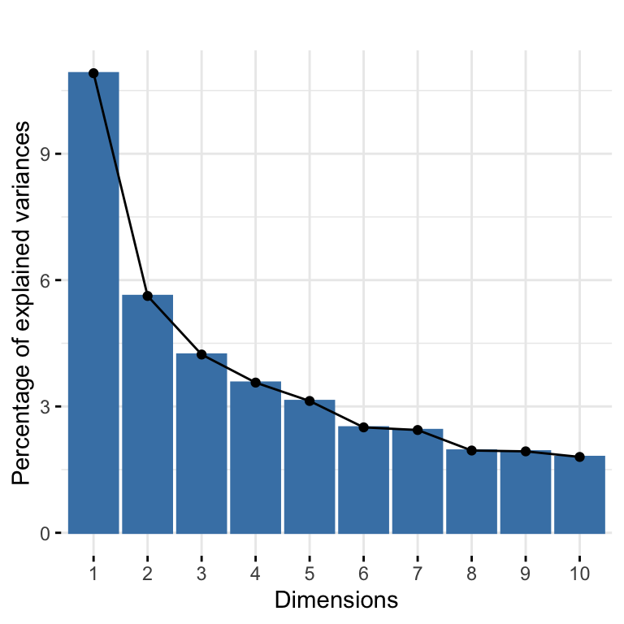
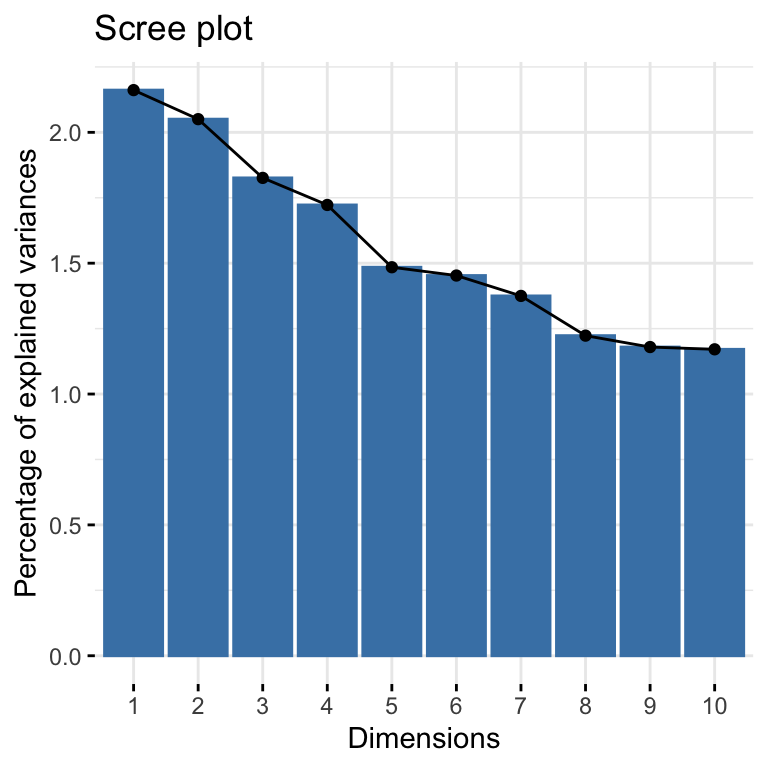

From Figure 8.7, we can see the plots are different. All trend toward less variance explained as the number of dimensions increase. But for our purposes, we are interested in the largest variance explained with the fewest dimensions. To that end, the Figure 8.7 (c) plot is the most reduced and most informative. The amount of variance explained is over 30% for the first dimension alone, however, the variance explained decreases between 4 and 5 dimensions. This is a good indication that we should use 4 dimensions for our clustering algorithm.
To calculate the amount of variance explained by each principle component we can square the standard deviations of the principle components and divide by the sum of the squared standard deviations. Let’s calculate the amount of variance explained by each principle component for each of our candidate feature matrices, as seen in Example 8.30.
Example 8.30
# Calculate variance explained for first 3 principle components
# lemma
masc_lemma_pca_var <-
masc_lemma_pca$sdev^2 / sum(masc_lemma_pca$sdev^2) * 100
sum(masc_lemma_pca_var[1:4])> [1] 24.3# pos
masc_pos_pca_var <-
masc_pos_pca$sdev^2 / sum(masc_pos_pca$sdev^2) * 100
sum(masc_pos_pca_var[1:4])> [1] 68.2# lemma tf-idf
masc_lemma_tfidf_pca_var <-
masc_lemma_tfidf_pca$sdev^2 / sum(masc_lemma_tfidf_pca$sdev^2) * 100
sum(masc_lemma_tfidf_pca_var[1:4])> [1] 7.76Combining the findings in the Scree plots and the variance explained calculations, we can see that the first four principle components of the part-of-speech features account for a good proportion of the variance. Therefore, all else being equal, we should use the part-of-speech features. As with all things exploratory, however, it is important to consider the implications of our feature selection for our interpretation of the results. In this case, the part-of-speech features approximate grammatical diversity of the documents, more so than lexical diversity. This means that the clusters that we identify will be based on a particular measure of grammatical diversity of the documents. If, for example, we want to identify clusters based on the lexical diversity of the documents, we may opt to use the lemma features, or some other operationalized measure of lexical diversity.
Before we leave PCA, let’s also take a look at the principle components themselves. The get_pca_var() function from the factoextra package can be used to extract the principle components from the output of the prcomp() function. The get_pca_var() function takes the output of the prcomp() function as its argument and an argument ncp = 10 to specify the number of principle components to include in the plot. Let’s create a plot of the first five principle components for the part-of-speech data, as seen in Figure 8.8.
# Load package
library(factoextra)
# Plot principle components: pos
masc_pos_pca |>
fviz_contrib(
choice = "var",
axes = 1:4,
top = 20
)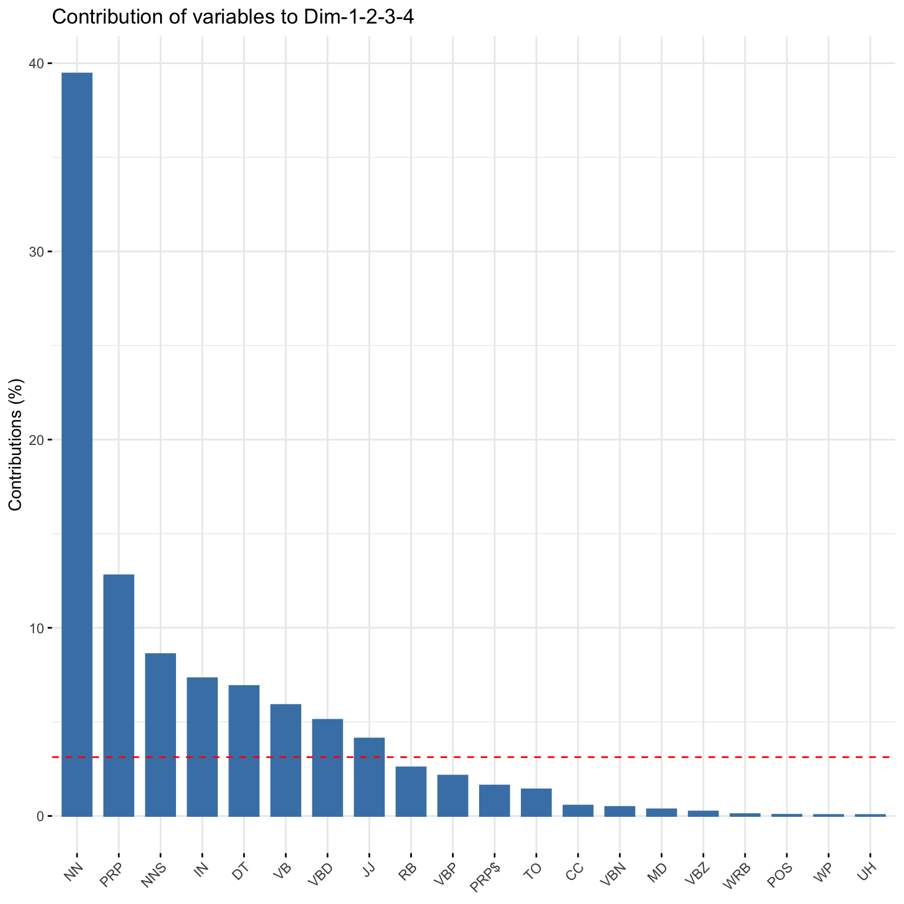
From Figure 8.8, we can see that the four principle components are dominated by the relative frequency of nouns, personal pronouns, prepositions, and determiners. This information can help us better understand the results of the clustering algorithm.
Now that we have identified the features that we want to use for clustering and we have represented the features in a way that can be used for clustering, we can apply a clustering algorithm to the data. For Hiearchical clustering, we can use the hclust() function from base R. The hclust() function takes a distance matrix as its argument and an argument method = "average" to specify the average linkage method. The average linkage method takes the average of the dissimilarities between all pairs in two clusters. It is less sensitive to outliers compared to other methods. Let’s apply the clustering algorithm to the part-of-speech features, as seen in Example 8.31.
Example 8.31
# Extract first 4 principle components
masc_pos_pca_pc <-
masc_pos_pca$x[, 1:4]
# Create distance matrix
masc_pos_dist <-
masc_pos_pca_pc |>
dist(method = "manhattan")
# Apply the clustering algorithm
masc_pos_hc <-
masc_pos_dist |>
hclust(method = "average")
# Visualize
masc_pos_hc |> fviz_dend(show_labels = FALSE)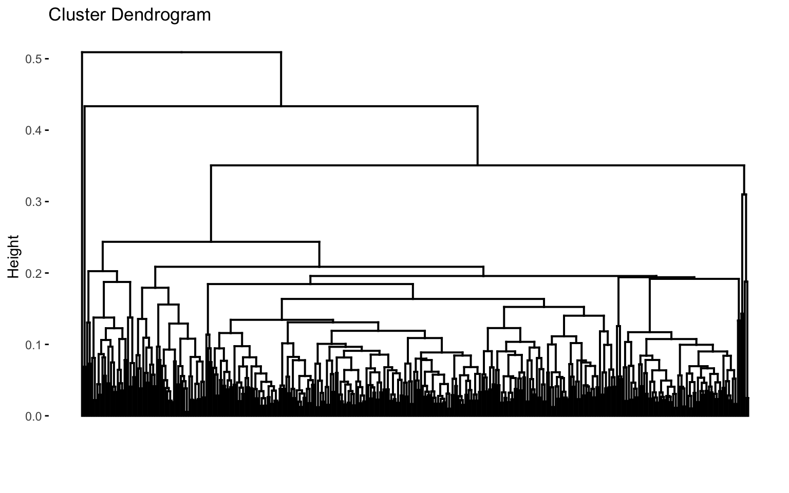
Since we are exploring the usefulness of the 18 genre labels used in the MASC dataset we have a good idea of how many clusters we want to start with. This is a good case to employ the K-means clustering algorithm. In K-means clustering, we specify the number of clusters that we want to identify. For each cluster number, a random center is generated. Then each observation is assigned to the cluster with the nearest center. The center of each cluster is then recalculated based on the distribution of the observations in the cluster. This process is iterates either a pre-defined number of times, or until the centers converge (i.e observations stop switching clusters).
We can use the kmeans() function from base R to apply the K-means clustering algorithm. The kmeans() function takes the matrix of features as its first argument and the number of clusters as its second argument. We can specify the number of clusters with the centers argument. The kmeans() function also takes an argument nstart to specify the number of random starts. The K-means algorithm is sensitive to the initial starting points, so it is a good idea to run the algorithm multiple times with different starting points. The nstart argument specifies the number of random starts. The default value is 1, but we can increase this to 10 or 20 to increase the likelihood of finding a good solution.
Our goal, then, will be to assess how well this number of clusters fits the data. If it does not fit the data well, we can try a different number of clusters. We can then compare the results of the clustering with the genre labels to see how well the clusters map to the labels and make ajustments to the way we group the labels as necessary.
Let’s start with 18 clusters, assuming the target of the number of genres in the MASC dataset. We can apply the K-means clustering algorithm to the part-of-speech features, as seen in Example 8.32.
Example 8.32
# Extract first 4 principle components
masc_pos_pca_pc <-
masc_pos_pca$x[, 1:4]
# K-means clustering
masc_pos_kmeans <-
masc_pos_pca_pc |>
kmeans(
centers = 18,
nstart = 25,
iter.max = 20
)The factoextra package provides fviz_cluster() function for visualizing the results of clustering algorithms. The fviz_cluster() function takes the output of the kmeans() function as its first argument and the matrix of features as its second argument. The fviz_cluster() function can be used to visualize the clusters in the data, as seen in Figure 8.10.
# Visualize
masc_pos_kmeans |> # output of kmeans()
fviz_cluster(
data = masc_pos_pca_pc, # matrix of features
ellipse.type = "norm",
ellipse.level = 0.95,
geom = "point",
pointsize = 1,
palette = "grey",
ggtheme = theme_qtalr()
)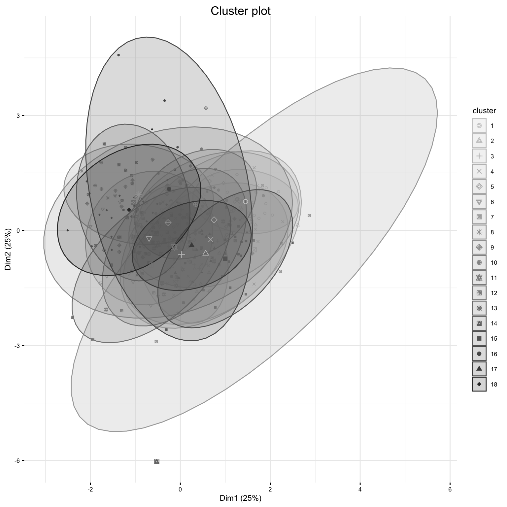
The ellipses in a k-means plot represent the 95% confidence interval for each cluster. The ellipses are based on the multivariate normal distribution of the data in each cluster. The size and shape of the ellipses tell us about the variance of the data in each cluster. The larger the ellipse the greater the dispersion of values. A wide ellipse suggests high within cluster variability. The distance between the clusters also tells us about the similarity between the clusters. The closer the clusters are to each other, the more similar they are. The further the clusters are from each other, the more dissimilar they are.
So in Figure 8.10, we see a mix of shapes and sizes. This suggests that some clusters are more homogeneous than others. We also see separation between the large wide clusters towards the top of the plot and the smaller, more circular clusters towards the center. With 18 clusters, we have a lot of clusters, so it is difficult to interpret the results as there is a large amount of overlap. In sum, 18 clusters is likely not an optimal number for this clustering approach.
We could run the code in Example 8.32 for different values for \(k\) and plot each in turn. But a more effective way to determine the optimal number of clusters is to plot the within-cluster sum of squares (WSS) for a range of values for \(k\). The WSS is the sum of the squared distance between each observation and its cluster center. With a plot of the WSS for a range of values for \(k\), we can identify the value for \(k\) where the WSS begins to level off. This is known as the elbow method. The elbow method is a heuristic, so it is not always clear where the elbow is. However, it is a good starting point for identifying the optimal number of clusters.
Again, the factoextra package has us covered. The fviz_nbclust() function can be used to plot the WSS for a range of values for \(k\). The fviz_nbclust() function takes the kmeans() function as its first argument and the matrix of features as its second argument. The fviz_nbclust() function also takes arguments method = "wss" to specify the WSS method and k.max = 20 to specify the maximum number of clusters to plot. Let’s plot the WSS for a range of values for \(k\), as seen in Figure 8.11.
# Determine the optimal number of clusters
masc_pos_pca_pc |>
fviz_nbclust(
FUNcluster = kmeans,
method = "wss", # method
k.max = 20,
nstart = 25,
iter.max = 20
)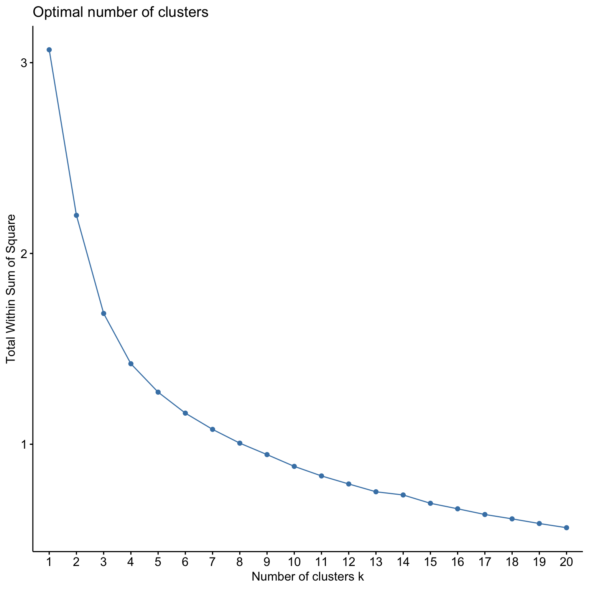
It is clear that there is significant gains in cluster fit from 1 to 4 clusters, but the gains begin to level off after 5-7 clusters. Now we can skip ahead and try 4 clusters, as seen in Example 8.33.
Example 8.33
# Set seed for reproducibility
set.seed(123)
# K-means: for 5 clusters
masc_pos_kmeans_fit <-
masc_pos_pca_pc |>
kmeans(
centers = 4,
nstart = 25,
iter.max = 20
)
# Visualize
masc_pos_kmeans_fit |>
fviz_cluster(
data = masc_pos_pca_pc,
ellipse.type = "norm",
ellipse.level = 0.95,
geom = "point",
pointsize = 1,
palette = "grey",
ggtheme = theme_qtalr()
)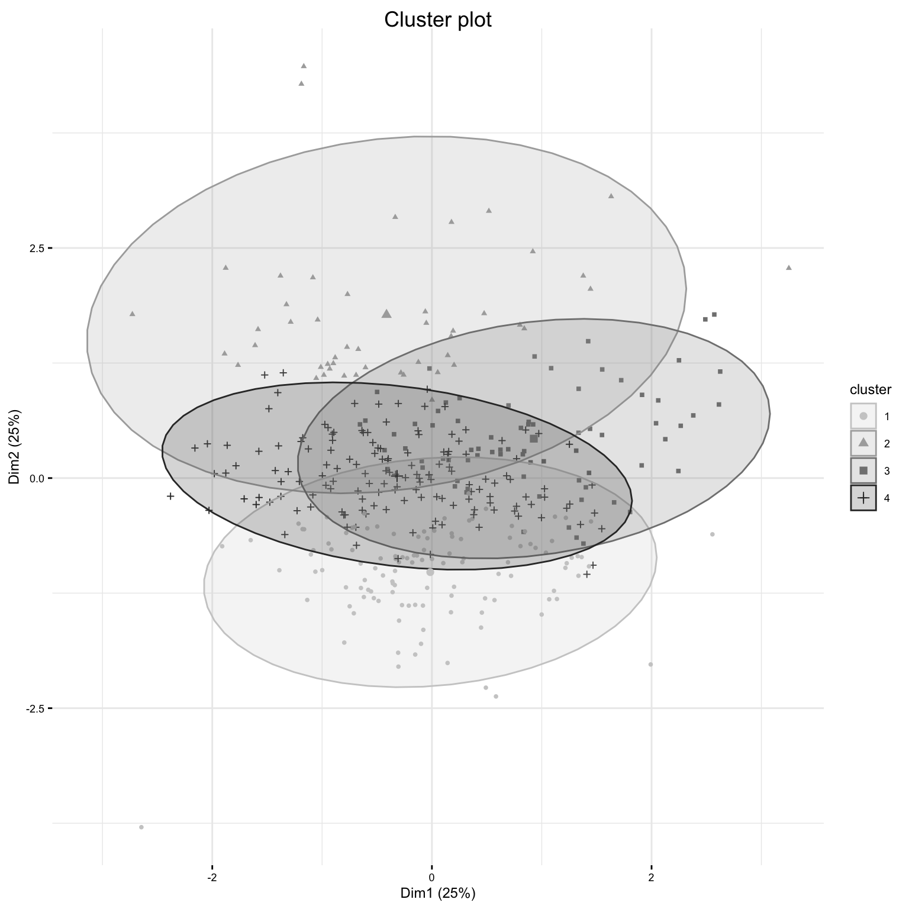
The results are much more interpretable with 4 clusters. We can see that the clusters are more homogeneous and more distinct from each other, in particular clusters 1 and 2, and are generally similar in shape and size. However, there is still some overlap between the clusters, in particular for clusters 3 and 4. We expect there to be noise as we have paired down the number of features from over 25k to 4, so this is a good working solution.
From this point we can join document-cluster pairings produced by the k-means algorithm with the original dataset. We can then explore the clusters in terms of the original features. We can also explore the clusters in terms of the original labels. Let’s join the cluster assignments to the original dataset, as seen in Example 8.34.
Example 8.34
# Organize k-means clusters into a tibble
masc_pos_cluster_tbl <-
tibble(
doc_id = names(masc_pos_kmeans_fit$cluster),
cluster = masc_pos_kmeans_fit$cluster
)
# Join cluster assignments to original dataset
masc_cluster_tbl <-
masc_tbl|>
left_join(
masc_pos_cluster_tbl,
by = "doc_id"
)
# Preview
masc_cluster_tbl |>
slice_head(n = 5)> # A tibble: 5 × 8
> doc_id modality genre term_num term lemma pos cluster
> <chr> <chr> <chr> <dbl> <chr> <chr> <chr> <int>
> 1 1 Written Letters 2 Your your PRP$ 1
> 2 1 Written Letters 3 contribution contribution NN 1
> 3 1 Written Letters 4 to to TO 1
> 4 1 Written Letters 6 will will MD 1
> 5 1 Written Letters 7 mean mean VB 1We now see that the cluster assignments from the k-means algorithm have been joined to the original dataset. We can now explore the clusters in terms of the original features. For example, let’s look at the distribution of the clusters across modality first, as seen in Example 8.35. To do this, we first need to reduce our dataset to the distinct combinations of modality, genre, and cluster. Then, we can use the janitor package’s tabyl() function to provided formatted percentages.
Example 8.35
# Load package
library(janitor)
# Reduce to distinct combinations of modality, genre, and cluster
masc_meta_tbl <-
masc_cluster_tbl |>
distinct(modality, genre, cluster)
# Tabulate: cluster by modality
masc_meta_tbl |>
tabyl(cluster, modality) |>
adorn_percentages("row") |>
adorn_pct_formatting(digits = 1)> cluster Spoken Written
> 1 30.8% 69.2%
> 2 0.0% 100.0%
> 3 0.0% 100.0%
> 4 8.3% 91.7%From Example 8.35, we can see that the clusters are not evenly distributed across the modalities. In particular, cluster 1 is where the great majority of the spoken modality appears. We can also appreciate that there may be some written genres that are more similar to spoken genres than other written genres. This may be something we could like to explore further.
Let’s dive into genres and limit our analysis to the written modality, as seen in Example 8.36. To do this, we first need to filter the dataset to the written modality. In addition to the row-wise percentages which capture the proportion of the genre that contributes to each cluster, let’s also consider the column-wise percentages to consider how each genre is distrributed across the clusters.
Example 8.36
# Tabulate: cluster by genre for written modality
masc_meta_tbl |>
filter(modality == "Written") |>
tabyl(cluster, genre) |>
adorn_percentages("row") |>
adorn_pct_formatting(digits = 1)> cluster Blog Email Essay Fiction Fictlets Government Jokes Journal Letters
> 1 11.1% 11.1% 11.1% 11.1% 11.1% 0.0% 11.1% 11.1% 11.1%
> 2 0.0% 20.0% 20.0% 0.0% 0.0% 0.0% 0.0% 0.0% 0.0%
> 3 20.0% 20.0% 0.0% 0.0% 0.0% 0.0% 0.0% 0.0% 20.0%
> 4 9.1% 9.1% 9.1% 9.1% 0.0% 9.1% 0.0% 9.1% 9.1%
> Newspaper Non-fiction Technical Travel Guide Twitter
> 11.1% 0.0% 0.0% 0.0% 0.0%
> 20.0% 20.0% 20.0% 0.0% 0.0%
> 20.0% 0.0% 0.0% 0.0% 20.0%
> 9.1% 9.1% 9.1% 9.1% 0.0%# Tabulate: cluster by genre for written modality
masc_meta_tbl |>
filter(modality == "Written") |>
tabyl(cluster, genre) |>
adorn_percentages("col") |>
adorn_pct_formatting(digits = 1)> cluster Blog Email Essay Fiction Fictlets Government Jokes Journal Letters
> 1 33.3% 25.0% 33.3% 50.0% 100.0% 0.0% 100.0% 50.0% 33.3%
> 2 0.0% 25.0% 33.3% 0.0% 0.0% 0.0% 0.0% 0.0% 0.0%
> 3 33.3% 25.0% 0.0% 0.0% 0.0% 0.0% 0.0% 0.0% 33.3%
> 4 33.3% 25.0% 33.3% 50.0% 0.0% 100.0% 0.0% 50.0% 33.3%
> Newspaper Non-fiction Technical Travel Guide Twitter
> 25.0% 0.0% 0.0% 0.0% 0.0%
> 25.0% 50.0% 50.0% 0.0% 0.0%
> 25.0% 0.0% 0.0% 0.0% 100.0%
> 25.0% 50.0% 50.0% 100.0% 0.0%On the other hand, looking at the written genres, we see that there are some genres which are grouped entirely in cluster 1. In other words, these genres, such as ‘Fictlets’ and ‘Jokes’, align with spoken genres in terms of their grammatical diversity. This is an interesting finding that we may want to explore further. Furthermore, it may be of interest to explore individual documents in genres which have a signifcant proportion of documents in cluster 1. There are too many possibilities to explore here but this is a good example of how exploratory data analysis can be used to identify new questions and new variables of interest.
Vector space models
In our discussion of clustering, we targeted associations between documents based on the distribution of linguistic features. We now turn to targeting associations between linguistic features based on their distribution across documents. The technique we will introduce is known as vector space modeling. Vector space modeling aims to represent linguistic features as numerical vectors which reflect the various linguistic contexts in which the features appear. Together these vectors form a feature-context space in which features with similar contextual distributions are closer together.
An interesting property of vector space models is that are able to capture semantic and/ or syntactic relationships between features based on their distribution. In this way, vector space modeling can be seen as an implementation of the distributional hypothesis –that words that appear in similar linguistic contexts tend to have similar meanings (Harris 1954). As Firth (1957) states “you shall know a word by the company it keeps”.
Let’s assume in our textbook project we are interested in gathering information about English’s expression of the semantic concepts of manner and motion. For learners of English, this can be an area of difficulty as languages differ in how these semantic properties are expressed. English is a good example of a “satellite-framed” language, that is that manner and motion are often encoded in the same verb with a particle encoding the motion path (“rush out”, “climb up”). Other languages such as Spanish, Turkish, and Japanese are “verb-framed” languages, that is that motion but not manner is encoded in the verb (“salir corriendo”, “koşarak çıkmak”, “走り出す”).
We can use vector space modeling to represent the distribution of verbs in the MASC dataset and then target the concepts of manner and motion to then explore how English encodes these concepts. The question will be what will our features be. They could be terms, lemmas, pos tags, etc. Or they could be some combination. Considering the task at hand which we will ultimately want to know something about verbs, it makes sense to include the part of speech information in combination with either the term or the lemma.
If we include term and pos then we have a feature for every morphological variant of the term (e.g. house_VB, housed_VBD, housing_VBG). This can make the model more sizeable than it needs to be. If we include lemma and pos then we have a feature for every lemma with a distinct grammatical category (e.g. house_NN, house_VB). Note that as the pos tags are from the Penn tagset, many morphological variants appear in the tag itself (e.g. house_VB, houses_VBZ, housing_VBG). This is a good example of how the choice of features can impact the size of the model. In our case, it is not clear that we need to include the morphological variants of the verbs, so we will use lemma and a simplified pos as our features.
To engineer these features we will need to simplify the tags. We will conflate Penn tagset distinctions between nouns, verbs, adjectives, and adverbs. This will give us a feature for every lemma with a distinct grammatical category (e.g. house_NOUN, house_VERB), and no more than that. To do this we can apply the case_when() function from the dplyr package. The case_when() function takes a series of logical statements and returns a value based on the first logical statement that is TRUE. Let’s conflate the Penn tagset distinctions between nouns, verbs, adjectives, and adverbs, as seen in Example 8.37.
Example 8.37
# Conflate Penn tagset into Universal-like tagset
masc_tbl <-
masc_tbl |>
mutate(xpos = case_when(
pos %in% c("NN", "NNS", "NNP", "NNPS") ~ "NOUN",
pos %in% c("VB", "VBD", "VBG", "VBN", "VBP", "VBZ") ~ "VERB",
pos %in% c("JJ", "JJR", "JJS") ~ "ADJ",
pos %in% c("RB", "RBR", "RBS") ~ "ADV",
TRUE ~ pos # keep other tags
))
# Lemma + pos
masc_tbl <-
masc_tbl |>
mutate(lemma_pos = str_c(lemma, xpos, sep = "_"))
# Preview
masc_tbl |> glimpse()> Rows: 439,539
> Columns: 9
> $ doc_id <chr> "1", "1", "1", "1", "1", "1", "1", "1", "1", "1", "1", "1", …
> $ modality <chr> "Written", "Written", "Written", "Written", "Written", "Writ…
> $ genre <chr> "Letters", "Letters", "Letters", "Letters", "Letters", "Lett…
> $ term_num <dbl> 2, 3, 4, 6, 7, 8, 9, 10, 11, 12, 14, 15, 16, 17, 18, 19, 20,…
> $ term <chr> "Your", "contribution", "to", "will", "mean", "more", "than"…
> $ lemma <chr> "your", "contribution", "to", "will", "mean", "more", "than"…
> $ pos <chr> "PRP$", "NN", "TO", "MD", "VB", "JJR", "IN", "PRP", "MD", "V…
> $ xpos <chr> "PRP$", "NOUN", "TO", "MD", "VERB", "ADJ", "IN", "PRP", "MD"…
> $ lemma_pos <chr> "your_PRP$", "contribution_NOUN", "to_TO", "will_MD", "mean_…When VSM is applied to words, it is known as word embedding. To calculate word embeddings there are various algorithms that can be used (BERT, word2vec, GloVe, etc.) The most common algorithm is word2vec (Mikolov et al. 2013). Word2vec is a neural network-based algorithm that learns word embeddings from a large corpus of text. In the word2vec algorithm the researcher can choose to learn embeddings from a Continuous Bag of Words (CBOW) or a Skip-gram model. The CBOW model predicts a target word based on the context words. The Skip-gram model predicts the context words based on the target word. The CBOW model is faster to train and is better for frequent words. The Skip-gram model is slower to train and is better for infrequent words.
Another consideration to take into account is the size of the corpus used to train the model. VSM provide more reliable results when trained on larger corpora. The MASC dataset is relatively small. We’ve simplified our features in order to have a smaller vocabulary in hopes to offset this limitation to a degree. But the choice of either CBOW or Skip-gram can also help to offset this limitation. CBOW can be better for smaller corpora as it aggregates context infomation.
To implement the word2vec algorithm on our lemma + pos features, we will use the word2vec package. The word2vec() function takes a text file and uses it to train the vector representations. To prepare the MASC dataset for training, we will need to write the lemma + pos features to a text file as a single character string. We can do this by first collapsing the lemma_pos variable into a single string for each document using the str_c() function from the stringr package. Then we can use the writeLines() function to write the string to a text file. Let’s prepare the MASC dataset for training, as seen in Example 8.38.
Example 8.38
# Prepare data for word2vec training
masc_tbl |>
summarize(text = str_c(lemma_pos, collapse = " ")) |>
pull(text) |>
writeLines(
con = "../data/derived/masc_word2vec.txt"
)With our masc_word2vect.txt file, we read in. apply the word2vec algorithm using the word2vec package, and write the model to disk. By default, te word2vec() function applies the CBOW model, with 50 dimensions, a window size of 5, and a minimum word count of 5. We can change these parameters as needed, but let’s apply the default algorithm to the text file spliting features by sentence punctuation, as seen in Example 8.39.
Example 8.39
# Load package
library(word2vec)
# Traing word2vec model
masc_model <-
word2vec(
x = "../data/derived/masc_word2vec.txt",
split = c(" ", ".?!"),
)
# Write model to disk
write.word2vec(
masc_model,
file = "../data/derived/masc_word2vec.bin"
)Writing the model to disk is important as it allows us to read the model in without having to retrain it. In cases where the corpus is large, this can save a lot of computational time.
Now that we have a trained model, we can read it in with the read.vectors() function from the wordVectors package.
Example 8.40
# Load package
library(wordVectors)
# Read word2vec model
masc_model <-
read.vectors(
filename = "../data/derived/masc_word2vec.bin"
)The read.vectors() function returns a matrix where each row is a term in the model and each column is a dimension in the vector space, as seen in Example 8.41.
Example 8.41
# Inspect
dim(masc_model)> [1] 5892 50# Preview
masc_model[1:5, 1:5]> A VectorSpaceModel object of 5 words and 5 vectors
> [,1] [,2] [,3] [,4] [,5]
> map_VERB 0.476 0.590 0.572 -0.547 -0.0146
> KGCUBS10_NOUN -0.304 1.506 -0.407 1.518 0.1857
> MICKEY3_NOUN -0.259 0.854 -0.925 0.759 0.1816
> amenity_NOUN 1.284 0.502 -0.921 0.488 -1.1896
> transmission_NOUN -1.580 1.493 -0.205 1.457 -1.7360
> attr(,".cache")
> <environment: 0x7fdc08066940>The row-wise vector in the model is the vector representation of each feature. The notion is that these values can now be compared with other terms to explore distributional relatedness. We can extract specific features from the matrix using the [] operator.
As an example, let’s compare the vectors for noun-verb pairs for the lemmas ‘run’ and ‘walk’. To do this we extract these features from the model. To appreciate the relatedness of these features it is best to visualize them. We can do this by first reducing the dimensionality of the vectors using principal components analysis (PCA). We can then plot the first two principle components, as seen in Figure 8.13.
Example 8.42
# Extract vectors
word_vectors <-
masc_model[c("run_VERB", "walk_VERB", "run_NOUN", "walk_NOUN"), ] |>
as.matrix()
pca <-
word_vectors |>
scale() |>
prcomp()
pca_tbl <-
as_tibble(pca$x[, 1:2]) |>
mutate(word = rownames(word_vectors))
pca_tbl |>
ggplot(aes(x = PC1, y = PC2, label = word)) +
geom_point() +
ggrepel::geom_text_repel()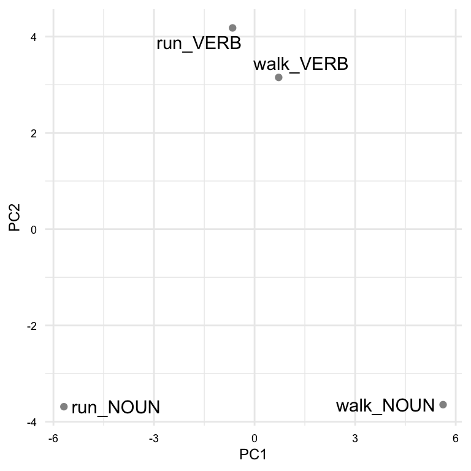
From Figure 8.13, we can see that each of these features occupies a distinct position in the reduced vector space. But on closer inspection, we can see that there is a relationship between the lemma pairs. Remember that PCA reduces the dimensionality of the data by identifying the dimensions that capture the greatest amount of variance in the data. This means that of the 50 dimensions in the model, the PC1 and PC2 correspond to orthogonal dimensions that capture the greatest amount of variance in the data. If we look along PC1, we can see that there is a distinction between part-of-speech. Looking along PC2, we see some pariety between lemma meanings. Given these features, we can see that meaning and grammatical category can be captured in the vector space.
An interesting property of vector space models is that we can build up a dimension of meaning by adding vectors that are expect to approximate that meaning. For example, we can add the vectors for typical motion verbs to create a vector for motion-similarity and one for manner-similarity. We can then compare the feature vectors for all verbs and assess their motion-similarity and manner-similarity.
To do this let’s first subset the model to only include verbs, as in Example 8.43. We will also remove the part-of-speech tags from the rownames of the matrix as they are no longer needed.
Example 8.43
# Filter to verbs
verbs <- str_subset(rownames(masc_model), ".*_VERB")
verb_vectors <- masc_model[verbs, ]
# Remove part-of-speech tags
rownames(verb_vectors) <-
verb_vectors |>
rownames() |>
str_replace_all("_VERB", "")
# Inspect
dim(verb_vectors)> [1] 1115 50# Preview
verb_vectors[1:5, 1:5]> A VectorSpaceModel object of 5 words and 5 vectors
> [,1] [,2] [,3] [,4] [,5]
> map -1.4875 1.510 -0.662 -1.2129 -0.646
> whip 0.0496 0.919 -1.020 0.3087 0.350
> enroll -0.6251 1.620 -1.878 0.0861 -0.428
> tuck 0.5610 1.054 -1.331 -0.5298 1.598
> suppress 0.3824 1.928 -1.750 -0.3229 -0.643
> attr(,".cache")
> <environment: 0x7fa1f92fcf00>We now have verb_vectors which includes the vector representations for all verbs 1115 in the MASC dataset. Next, let’s seed the vectors for motion-similarity and manner-similarity and calculate the vector ‘closeness’ to the motion and manner seed vectors with the closest_to() function from the wordVectors() package.
Example 8.44
# Add vectors for motion-similarity and manner-similarity
motion <-
c("go", "come", "leave", "arrive", "enter", "exit", "depart", "return")
motion_similarity <-
verb_vectors |> closest_to(motion, n = Inf)
# Preview
motion_similarity |> glimpse()> Rows: 1,115
> Columns: 2
> $ word <chr> "sever", "hang", "nod", "splash", "return", "sl…
> $ `similarity to motion` <dbl> 0.781, 0.776, 0.769, 0.760, 0.755, 0.755, 0.745…manner <-
c("run", "walk", "jump", "crawl", "swim", "fly", "drive", "ride")
manner_similarity <-
verb_vectors |> closest_to(manner, n = Inf)
# Preview
manner_similarity |> glimpse()> Rows: 1,115
> Columns: 2
> $ word <chr> "crawl", "drop", "step", "hang", "walk", "throw…
> $ `similarity to manner` <dbl> 0.894, 0.880, 0.867, 0.861, 0.858, 0.857, 0.850…The motion_similarity and motion_similarity data frames each contain all the verbs with a corresponding closeness measure. We can join these two data frames by feature to create a single data frame with the motion-similarity and manner-similarity measures, as seen in Example 8.45.
Example 8.45
# Join motion-similarity and manner-similarity
manner_motion_similarity <-
manner_similarity |>
inner_join(motion_similarity)
# Preview
manner_motion_similarity |> glimpse()> Rows: 1,115
> Columns: 3
> $ word <chr> "crawl", "drop", "step", "hang", "walk", "throw…
> $ `similarity to manner` <dbl> 0.894, 0.880, 0.867, 0.861, 0.858, 0.857, 0.850…
> $ `similarity to motion` <dbl> 0.742, 0.743, 0.692, 0.776, 0.695, 0.627, 0.702…The result of Example 8.45 is a data frame with the motion-similarity and manner-similarity measures for all verbs in the MASC dataset. We can now visualize the distribution of motion-similarity and manner-similarity measures, as seen in Figure 8.14.

From Figure 8.14, we can see that the manner-similarity is plotted on the x-axis and the motion-similarity on the y-axis. I’ve added horizontal and vertical lines to break the scatterplot into quadrants –the top-right corresponding to high manner- and motion-similiarity and the bottom-left corresponding to low manner- and motion-similarity. This captures the majority of the verbs in the dataset. The verbs in the top-left quadrant have high motion-similarity but lower manner similarity, and verbs in the bottom-right quadrant have high manner-similarity but lower motion-similarity.
I’ve randomly sampled 50 verbs from the dataset and plotted them as text labels. I’ve also plotted the motion and manner seed vectors as triangle and box points, respectively. We can see that motion- and manner-similiarity seed verbs are found in the top-left quandrant together, showing that they are semantically related. Verbs in the other quadrants are either lower in motion- or manner-similarity, or both. From a qualitative point of view it appears that many of the verbs coincide with inuition. Some, however, less so. This is to be expected to some degree as the model is trained on a relatively small corpus. All in all, this serves as an example of how vector space modeling can be used to explore semantic relationships between linguistic features.
8.3 Summary
In this chapter we surveyed a range of methods for uncovering insights from data, particularly when we do not have a predetermined hypothesis. We broke the chapter discussion along the two central branches of exploratory data analysis: descriptive analysis and unsupervised learning. Descriptive analysis offers statistical or visual summaries of datasets through frequency, dispersion, and co-occurrence measures, while unsupervised learning utilizes machine learning techniques to uncover patterns without predefining variable relationships. Here we covered a few unsupervised learning methods including clustering, diminensionality reduction, and vector space modeling. Through either descriptive or unsupervised learning methodologies, we probe questions in a data-driven fashion and apply methods to summarize, reduce, and sort complex datasets. This in turn facilitates novel, quantitative perspectives that can subsequently be evaluated qualitatively, offering us a robust approach to exploring and generating research questions.